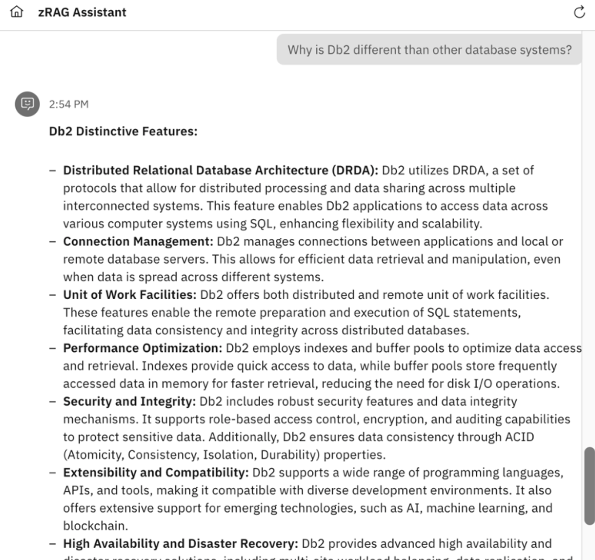

IBM wxa4z L4 Lab Guide
| Description | IBM watsonx Assistant for Z for Technical Sales Level 4 Lab Guide |
| Author(s) | Max Weiss (maxwell.g.weiss@ibm.com) |
| Copyright | Copyright © 2025 IBM - V 3.0 |
Welcome#
Welcome to the IBM watsonx Assistant for Z for Technical Sales Level 4 Lab Guide (lab guide). The lab guide is part of the IBM watsonx Assistant for Z for Technical Sales Level 4 learning plan for IBM and Business Partner Technical Sales and related badge. The learning plan is intended to teach technical sellers and Business Partners how to conduct a proof of experience (PoX) for a client.
In a fast-paced world, things change...
The products and services may appear differently than what is shown in the lab guide. This can occur if the product or service is updated with a new version.
Responses generated by IBM watsonx Assistant for Z are likely to change over time. The responses you see when you run the queries in this section may differ from the screen images captured in the lab guide.
Prerequisite knowledge#
The prerequisite requirements to complete this course are as follows:
-
Basic Windows or Linux (MacOS) Operating System admin skills, including:
-
Open a command prompt or power shell on Windows, or a terminal window on Linux (MacOS)
-
Change directories, create directories, and move directories
-
Set environment variables and add directories to the default PATH
-
Create and modify plain text files with an editor and save as plain text files
-
Familiarity with a visual code editor like VS Studio Code is a plus
-
-
The following links may help with these basic skills. This is not an endorsement of the sources. Try searching the internet for related resources.
-
Windows tutorials (and other videos in the series).
-
The 50 most popular Linux & terminal commands - full course for beginners (based on the following book).
-
The Linux Commands Handbook (Linux/MacOS).
-
Read and follow all the directions.
It is important to read and follow all the documented steps. Skipping steps or sections can cause issues with completing the lab.
Also, invest a few minutes in reading the tips in the Using the demonstration guide section. The tips will save you time and frustration in completing the lab.
Lab overview#
This lab guide covers the setup, configuration, and usage of watsonx Assistant for Z. This lab guide uses the IBM watsonx Assistant for Z Velocity collection and the three Velocity Pilot lab environments in IBM Technology Zone (ITZ).
The lab guide also enables dedicated lab environments for customized client PoXs and demonstrations. If you are preparing for an actual pilot engagement, refer to the Pilot Scoping Guide for watsonx Assistant for Z for additional information.
Using the lab guide, you learn how to:
- Provision the lab environments
- Create an assistant and configuring conversational search
- Configure assistant settings
- Test conversational search
- Deploy a dedicated instance of OpenSearch for client document ingestion (Optional)
- Import skills for z/OS automations
- Connect apps to assistants
- Create assistant actions
- Create skill flows
- Publish and deploy an assistant
In addition, you import pre-packaged z/OS skills and create custom-built skills to deliver an assistant that handles 3 use cases:
- Retrieving initial program load (IPL) information
- Managing certificates
- Resource Access Control Facility (RACF) administration support
Not all capabilities of the offering are covered in the lab guide.
This lab guide covers many features and capabilities of IBM Watson Assistant for Z, but not all. Some uncovered capabilities may be available in ITZ environments, while others may not, such as using skills for OMEGAMON.
Support#
Think something is down? Check the applicable status pages for any known issues such as a site or service not being available:
For issues with provisioning the ITZ environment for this lab (for example, a failed reservation request due to insufficient quota capacity), open a ticket with ITZ support:
For issues related to specific steps found in the demonstration guide after the ITZ environment is provisioned, contact the authors:
-
Slack:
-
#watsonx-assistant-z-technical - IBM only
-
#wxo-practitioners - IBM only - for questions that are related to the software as a service (SaaS) instance of watsonx Orchestrate
Business Partners, use the IBM Training live Chat Support service or other support methods that are found on the IBM Training portal here.
Using the demonstration guide#
Use these helpful tips to take full advantage of the IBM watsonx Assistant for Z for Technical Sales Level 4 Lab Guide.
Printing the demonstration guide
Printed or saved copies can be out of date
The IBM watsonx Assistant for Z for Technical Sales Level 4 Lab Guide changes regularly to match the IBM watsonx Assistant for Z offering and associated ITZ environment. Printed or saved copies of the demonstration guide can become out-of-date quickly and result in failed steps.
A ready-to-print PDF version of the IBM watsonx Assistant for Z for Technical Sales Level 4 Lab Guide is here.
Create a reference card for storing user IDs, passwords, and links for your ITZ environments.
You will be creating and using multiple user IDs, passwords, links, and other content throughout the lab. To save time, it is strongly suggested you create a simple text file to store this data so it is readily available and you can easily cut and paste the data when needed. Here is a template to get you started.
watsonx Assistant for Z - Level 4 shortcuts:
watsonx Orchestrate
IBM Cloud account:
IBM Cloud resources: https://cloud.ibm.com/resources
watsonx Orchestrate URL:
Assistant name:
Assistant description:
Assistant icon: https://ibm.github.io/SalesEnablement-L4-watsonx-AssistantForZ/Setup/_attachments/Zeeves75x75.png
OpenShift
Cluster Admin Username: kubeadmin
Cluster Admin Password:
OCP Console:
IBM Cloud container entitlement key:
OS-secret password:
Client ingestion AuthKey:
Wrapper password:
Cluster domain for routes:
Ingestion route (append /v1/query):
Ansible
Ansible Automation Platform URL:
AAP User Name: admin
AAP password:
Wazi User: IBMUSER
Wazi Password:
Wazi URL:
Live Embed
inetegrationID:
region:
serviceInstanceID:
Viewing images
Images in the demonstration guide can be enlarged by clicking on the image. Press the Esc key or click the X to dismiss the enlarged image.

Image highlighting
In some images, the following styles of highlighting are used:
-
Solid highlight box: This style of box highlights where to click, enter, or select an item.

-
Dash highlight box: This style of box highlights one of two things: the path to follow to get to a specific location in the user interface, or areas to explore on your own.

Copying commands and prompts
Copying and pasting commands and prompts from this demonstration guide is easy and can eliminate typographical errors.
Click the highlighted copy icon and then use your operating system's paste function. For example, Ctrl+V, or right-click and select Paste.

Acronyms and terminology
IBM employees and the tech industry in general, tend to use acronyms. In the demonstration guide, most acronyms will appear with a dashed underline. Hover over the acronym to learn its meaning. A question mark ( ) icon will first appear and after a second the tool tip with the acronym's meaning is displayed. Try it here: LPAR.
) icon will first appear and after a second the tool tip with the acronym's meaning is displayed. Try it here: LPAR.

The Lab Guide table of contents
This Demonstration Guide uses a responsive browser-based interface to ensure pages are usable on various devices with different screen sizes. The Demonstration Guide table of contents may be displayed as highlighted in the green dashed box in this image:

However, if the browser window is sized smaller, the table of contents can be accessed by clicking the main menu icon ( ):
):

Click the main menu icon () to expand the table of contents.
Continue to the Reserve the IBM Technology Zone environments section to begin the journey to obtain the IBM watsonx Assistant for Z Technical Sales Advanced badge.
IBM Technology Zone environment#
To enable sellers to learn how to deliver client pilots of IBM watsonx Assistant for Z, three environments are available in IBM Technology Zone (ITZ). The environments are part of the watsonx Assistant for Z Velocity lab collection and can be found in the IBM watsonx Assistant for Z collection.
-
Watsonx Assistant for Z lab watsonx Orchestrate: provides a dedicated environment on IBM Cloud where you can create and configure the assistant, set up conversational search, import skills, and configure actions.
-
Ansible Automation Platform (AAP) & z/OS: provides a pre-configured instance of AAP and Wazi z/OS. This environment includes Ansible playbooks, which you can import as skills within watsonx Orchestrate and connect to your assistant. Preinstalled templates for various use cases are also available (covered in later sections). Learn more about AAP here. Learn more about Wazi, here.
-
Single Node OpenShift with NFS storage: provisions a single-node Red Hat OpenShift cluster (SNO) on IBM Cloud. This cluster installs a dedicated instance of OpenSearch for Watson Assistant for Z, enabling ingestion of client-supplied documents.-
All activities in this lab guide are required.
To earn the IBM watsonx Assistant for Z Technical Sales Advanced badge and complete the Level 4 learning plan, you must provision all three ITZ environments and finish every section in the lab guide. Disregard any statements in the ITZ collection that suggest optional environments or tasks.
Follow the instructions to create new reservation requests, extend the reservations, and access the ITZ demonstration environments. Provisioning the SNO environment in ITZ can take several hours, while the other two environments typically provisioning in under 30 minutes.
Create a reservation request#
-
Click each of the links that follow to open a browser to the reservation pages of the IBM watsonx Assistant for Z ITZ environments.
You may be asked to authenticate to IBM Technology Zone.
The steps to authenticate to ITZ are not detailed here as they may vary between users.
Watsonx Assistant for Z lab watsonx Orchestrate - reservation page
The next two steps are for one of the three environments. Repeat for all three environments.
Follow the steps to create a reservation in ITZ for all three environments.
-
Select Reserve now.
The Reserve now option creates a reservation for immediate use. Optionally, schedule the reservation for a later date, for example, when you are at your client's office to start a pilot.
-
Complete the reservation request form and then click Submit.
The first two reservations are similar to the first image and have fields a-e that need to be completed.
a. Name: specify a name for the reservation (optional).
b. Purpose: select the Education purpose tile.
For client pilots...
For client pilots, set the Purpose field in the reservation to Pilot and provide an opportunity number to receive a longer reservation.
c. Purpose description: enter a description, for example: Level 4 education.
d. Preferred geography: select the region nearest to your physical location for improved performance and reduced network latency.
e. End date and time: the initial maximum will be set to a specific number of days (typically two, but in somce cases longer) after the current date and time. Instructions follow to extend the reservation end date.
f. Accept the IBM Technology Zone's terms and conditions and security policies.
g. Click Submit.
In addition to the preceding fields, the reservation for the Single Node OpenShift with NFS storage has these additional fields:
h. OCP/Kubernetes cluster network: leave the default setting of 10.128.0.0/14.
i. Enable FIPS security: leave the default setting of No. Learn more about the Federal Information Processing Standards (FIPS) here.
j. Master single node flavor: select 32 vCPU x 128 GB - 300 GB ephemeral storage.
k. OpenShift version: select 4.14.
l. OCP/Kubernetes service network: leave the default setting of 172.30.0.0/16.
m. Accept the IBM Technology Zone's terms and conditions and security policies.
n. Click Submit.
{kind=link}
{kind=link}
{kind=link}
During the provisioning process, multiple emails are sent to you from ITZ as the provisioning process runs. One email states the reservation is provisioning and the other email states that the environment is Ready.
In rare cases, the provisioning process can fail. If you receive an email stating the reservation failed, try again by repeating Steps 1-3 for the environment that failed to provision. In addition, review the Troubleshooting section that follows. If issues continue, open an ITZ support ticket by using the methods that are mentioned in the Support section.
Extend the reservation#
When the reservations are in the Ready state, you can extend each reservation beyond its original end date. The duration of the extension will vary by reservation.
-
In the IBM Technology Zone portal, expand My TechZone and select My Reservations.
-
Click the overflow icon (
 ) on the reservation tile and select Extend.
) on the reservation tile and select Extend.
{kind=link}
{kind=link}
{kind=link}
If you anticipate needing more time, repeat Steps 5-6 to extend the reservation to the maximum allowed. Repeat these steps for the other two reservations.
Join the ITZ IBM Cloud account#
Both the watsonx Assistant for Z lab watsonx Orchestrate and the Ansible Automation Platform (AAP) & z/OS environments add you to an IBM Cloud account while your reservation is active. During the provisioning process of these ITZ environments, you receive two emails from IBM Cloud.
You only need to accept the invitation to the watsonx Assistant for Z lab watsonx Orchestrate environment.
-
Open the email from IBM Cloud and click the Join now links.
-
In the Join IBM Cloud browser window that opens, select the I accept the product Terms and Conditions of the registration form, and then click Join Account.
{kind=link}
{kind=link}
After joining the account, verify that the account appears in your available account list in the IBM Cloud portal.
-
Click the following link to open a browser to the IBM Cloud portal.
-
Follow the directions to complete the authentication to IBM Cloud using the same email address you used to login to ITZ. The login steps vary depending on any two-factor authentication methods enabled.
-
Click the account menu and verify access to the IBM Cloud account listed in your ITZ reservation.
The account may be different.
The account name should align with the account named in the invitation email you received.
Does your IBM Cloud portal view look different?
If your IBM Cloud portal looks different from the images above, it could be because the IBM Cloud portal has gone through a design change, or your browser window is set to smaller size. Instead of the current selected account appearing in the top menu, you may see this change account icon:
 . Click this icon to view the list of accounts you can access.
. Click this icon to view the list of accounts you can access.
{kind=link}
{kind=link}
Accessing the environments#
Each reservation provides access to its respective environment. Details for accessing each environment are provided in the Pilot setup sections that follow in the lab guide.
After all three reservations are in the Ready state and you accept the invitations to the IBM Cloud accounts, proceed to the next section to complete the pilot setup.
Troubleshooting#
If your reservation for the Single Node OpenShift environment fails...
If your reservation for the Single Node OpenShift environment fails, try selecting one of the eu-gb region options as the Preferred Geography.
TechZone Environment Reservations and Steps to Access
watsonx Orchestrate and other SaaS services#
Summary of the environment#
The first Lab environment is a set of IBM Cloud SaaS resources well refer to in this Lab as the IBM watsonx Orchestrate environment. The resources are dedicated to you and are all available within the same IBM Cloud account youve been granted access to. The SaaS resources used in this Lab guide consist of the three components below:
-
watsonx Orchestrate
IBM watsonx Assistant for Z is powered by watsonx Orchestrate, a generative AI platform for building, accessing and testing AI agents and assistants. As an on-prem solution, the watsonx Orchestrate component of watsonx Assistant for Z is deployed on Red Hat OpenShift and the IBM Cloud Pak platform. With version 3 of the offering comes the ability to connect your agents to a broad range of components, including IBM Z infrastructure, middleware, tools, third-party software and custom applications, forming the foundation for scalable and secure enterprise operations.
The chat interface allows users to engage with the system through conversational AI and goal-oriented agents. It provides an intuitive and responsive way to access the platforms capabilities.
For the purpose of the Lab, you will be using a dedicated SaaS tenant of watsonx Orchestrate on IBM Cloud where you will be able to deploy your AI agents for watsonx Assistant for Z, as well as zRAG assistants to demonstrate various use cases.
Later in the lab you will also use your watsonx Orchestrate environment to build your own agents for a set of Z specific use cases.
-
watsonx.ai Runtime (WML)
As mentioned above, you will be leveraging a cloud-based deployment to configure and execute various use cases supported by watsonx Assistant for Z. As such, you will leverage the watsonx.ai Runtime SaaS component on IBM Cloud to provide the underlying compute resources and services to power the AI agents you deploy. This provides a way to enable the Agentic AI features of the solution for the purposes of demos and pilots without having to install the full solution on-prem.
-
IBM Cloud Object Storage (COS)
The last IBM Cloud SaaS service in scope for the Lab is IBM Cloud Object Storage (COS) which is used for ingesting customer documentation into the zRAG component of watsonx Assistant for Z. It will be used to demonstrate how clients can augment their agent and assistants conversational search capabilities by creating an internal knowledge base with their own documentation. This allows users to get insightful responses to a rnage of questions not possible with the default documentation within the zRAG.
Accessing the environment#
Follow the below instructions to access your IBM Cloud SaaS environment containing dedicated resources for watsonx Orchestrate, watsonx.ai Runtime (WML), and Cloud Object Storage:
-
In the IBM Technology Zone portal, expand My TechZone and select My Reservations, or click the following link.

-
Click the watsonx Assistant for Z Pilot - watsonx Orchestrate tile.
-
Record the ITZ IBM Cloud account name associated with the reservation.

-
Click the IBM Cloud Login link.

-
After logging in, verify that the current IBM Cloud account is the same as the account name recorded in the previous step. If the account is not the same, switch to the proper account.
NOTE: if the cloud account is not listed in the possible options in the drop-down, you will first need to join the IBM Cloud account. Follow the optional steps below to illustrate the process, and then repeat the above steps to access your cloud resources.
a. When you were invited to join the cloud account, you should have received an email invitation to join. The email should look like the following:
Click Join now in the email invitation.
b. In the Join IBM Cloud browser window that opens, select the I accept the product Terms and Conditions of the registration form, and then click Join Account.
c. After joining the account, verify that the account appears in your available account list in the IBM Cloud portal.
Note: your cloud account will be different. Refer to your environment details to identify the correct cloud account.
-
Once the appropriate Cloud account is selected from the drop-down, navigate to your Resources by clicking on the Resources icon.
-
Expand the AI / Machine Learning section and you should see the following resources available:

-
Additionally, you should have an instance of Cloud Object Storage available. Confirm the resource availability by scrolling down in the Resource list, and then expand the Storage section which should show your Cloud Object Storage instance as shown below:
Once verified, you can proceed to the next section. Later on in this lab you will be instructed to access a particular resource within your IBM Cloud account. Ensure you follow the instructions above to reach your Resources list.
{kind=link}
{kind=link}
{kind=link}
{kind=link}
{kind=link}
{kind=link}
{kind=link}
Single Node OpenShift Cluster#
Summary of the environment#
The next Lab environment you will use is the Single Node OpenShift cluster deployed on IBM Cloud.
The very first hands-on exercise in the Lab will be accessing your OpenShift cluster and deploying the zAssistantDeploy services with all dependent resources, including OpenSearch with the watsonx Assistant for Z RAG and the Client Ingestion service. This will service as a foundation for later deploying AI Agents onto your cluster that can be imported into watsonx Orchestrate for accessing and testing.
Disclaimer: The various components of watsonx Assistant for Z (i.e. zRAG OpenSearch database) are deployed and collocated alongside the deployment of watsonx Orchestrate. For this Lab, you will use a dedicated OpenShift cluster for the sole purpose of deployed these components, with the exception of watsonx Orchestrate (SaaS version), as well as AI agents which will be made accessible within watsonx Orchestrate SaaS.
Accessing the environment#
Follow the below instructions to access your Single Node OpenShift environment.
-
Click the following link to open a browser window to your ITZ reservations.
-
Click the Single Node OpenShift tile.
-
Scroll down and record the Cluster Admin Username and Cluster Admin Password.
-
Click the OCP Console link.
-
Enter the Cluster Admin Username and Cluster Admin Password values from step 3 and click Log in.
{kind=link}
{kind=link}
{kind=link}
{kind=link}
Ansible Automation Platform (AAP) & z/OS#
Summary of the environment#
The third lab environment you will use is the Ansible Automation Platform (AAP) & z/OS environment. This provides a pre-configured instance of both Ansible Automation Platform (AAP) and Wazi aaS z/OS deployed on IBM Cloud.
The two resources are provisioned together in the TechZone environment and enables users to manage and automate z/OS tasks and subsystems with various pre-installed Ansible playbooks. It includes a z/OS back-end (Wazi as a Service) with all needed pre-requisites to quickly get started.
This environment will come into play later on in the Lab when deploying your AI Agents. Each Agent has its own mechanism for accessing the back-end environment and performing tasks, gathering insights, etc.
As an example, you will later deploy the IBM Z Upgrade Agent which leverages z/OSMF APIs to your back-end Wazi z/OS system. As another example, the IBM Z Support Agent you will later deploy will connect to your Ansible Automation Platform (AAP) instance to automate the collection and transfer of z/OS dumps.
This environment will also be later used when building your own agent to automate the certificate renewal process on z/OS.
Accessing the environment#
Follow the below instructions to access your Ansible Automation Platform (AAP) environment. Instructions later on in the Lab will instruct you on accessing the Wazi aaS z/OS environment.
-
In the IBM Technology Zone portal, expand My TechZone and select My Reservations, or click the following link:
-
Click the watsonx Assistant for Z Pilot - AAP & z/OS tile.
-
Locate and record the AAP User Name (For UI access) and AAP User Password fields.
-
Record and then click the Ansible Automation Platform UI link.
-
Enter the Username and Password that is recorded in step 3 and click Log In.
-
Once logged in, you should be directed to the Dashboard view within the AAP Web console, as shown below:
{kind=link}
{kind=link}
{kind=link}
{kind=link}
{kind=link}
{kind=link}
Deploy and configure zAssistantDeploy
Overview of zAssistantDeploy#
IBM watsonx Assistant for Z leverages Conversational AI to provide accurate answers to questions related to IBM Z with detailed steps and links to enhance learning. This feature is based on Large Language Model (LLM) coupled with domain-specific Retreival-Augmented Generation (RAG) which augments the LLM with IBM Z domain- specific knowledge base and information.
As an Openshift-based solution, watsonx Assistant for Z provides this capability via the zAssistantDeploy service on OpenShift. With the purchase of watsonx Assistant for Z, customers acquire entitlement to the watsonx Assistant for Z operator which is usd to deploy and configure the zAssistantDeploy service.
zAssistantDeploy provides an OpenSearch deployment that is pre-installed with IBM Z documentation, along with a data ingestion service that can be used to load your own documents into the knowledge base. The solutions search parameters can then be configured to fetch content from those ingested documents.
In this section, you will be deploying and configuring the zAssistantDeploy component of the solution on your provided OpenShift cluster to enable the zRAG capabilities for conversational AI.
Steps include:
-
Accessing and logging into your OpenShift cluster from your local workstation
-
Installing IBM Cert Manager on your cluster
-
Installing the watsonx Assistant for Z Operator
-
Deploying secrets required for OpenSearch and the Client Ingestion service
-
Deploying the zAsssistantDeploy service on your cluster
-
Verifying successful deployment and acquiring your OpenSearch connection details
Following this section, you will learn how to connect assistants and agents to your OpenSearch instance in order to configure conversational search leveraging the zRAG, as well as the ability to ingest custom documentation into the RAG database.
Install the oc CLI and log into OpenShift#
Install the oc command-line utility#
The Red Hat OpenShift command line interface (CLI) utility, which is known as oc, must be installed on your local workstation. If you already installed the oc utility, you can proceed to the next section.
This can be verified by issuing the oc command on your local command-line. If you already installed the oc utility, you can proceed to the next section.
-
Log into your Single Node OpenShift cluster via web console by following the instructions here.
-
Click the Help icon and then click Command Line Tools.
-
Click the link under oc - OpenShift Command Line Interface (CLI) for the operating system of your local machine.
Clicking the preceding link automatically downloads either a .zip or .tar file specific to your operating system. Extract the file's content.
Place the oc binary for your operating system (OS) in a directory that is in your default
PATH, or set thePATHenvironment variable to include the location of the oc binary. -
Verify the installation by running the
occommand on your local workstation.oc --help
{kind=link}
{kind=link}
{kind=link}
Log into your OpenShift cluster from your local terminal#
Note: If you just installed the oc utility, you should already be logged into the cluster and can skip the first couple of steps.
-
Log into your Single Node OpenShift cluster via web console by following the instructions here.
-
Click the
kube:adminprofile drop-down and click Copy login command. -
Click Display Token.
-
Select and copy the Log in with this token string.
For most operating systems, double-click the value, then right-click and select Copy**.
-
Open a command prompt or terminal window on your local workstation. Then paste the login command and press enter.
{kind=link}
{kind=link}
{kind=link}
{kind=link}
Download the zAssistantDeploy configuration folder#
In this step you will download a .zip file from Box containing the YAML files needed to deploy zAssistDeploy.
-
On your local workstation, click on this Box link to view the provided zAssistDeploy.zip file:
-
Once you can view the file in Box, click Download to download the file to your local workstation.
-
Once downloaded, go to your local workstations Downloads folder and extract/unzip the zAssistDeploy.zip file.
-
You should then see the unzipped/extracted folder with the included YAML files as shown below (for Mac users):
-
On your local machines command-line, change to the zAssistDeploy directory. On Mac, this can be done by issuing the following command:
cd Downloads/zAssistDeployUse the corresponding command for Windows users.
-
Once youve changed to the extracted zAssistDeploy directory via command-line, you should be able to list the contained files. Below is an example for Mac users:
{kind=link}
{kind=link}
{kind=link}
Install IBM Cert Manager on cluster#
-
On your local command-line, apply the IBM Certificate Manager Operator in your OpenShift cluster by running the following command:
oc apply -f catalogCertManager.yamlThe preceding command should return a message that states the ibm-cert-manager-catalog was created.
-
In the OpenShift web console, click Operators and then select OperatorHub.
-
Click the Project to pull-down menu and click the Show default projects toggle.
-
Scroll down and select openshift-marketplace.

-
Enter IBM Cert Manager in the search field and then click the IBM Cert Manager tile.
Note:* it may take a minute or 2 for the IBM Cert Manager* tile to appear. Click on a different tab and go back to it to refresh.
-
Click Install.

-
Keep the default settings and click Install.

NOTE: the installation process takes a few minutes. DO NOT continue until you see the following message:
Installed operator: ready for use.
{kind=link}
{kind=link}
{kind=link}
Install the watsonx Assistant for Z Operator#
In this step you will install the watsonx Assistant for Z operator to deploy and configure zAssistantDeploy on your cluster. First, you will need to deploy the catalog source using the provided YAML file.
-
In your local command prompt or terminal window, create 2 new namespaces called
wxa4z-operatorandwxa4z-zadin the cluster by issuing the following 2 commands in sequence:oc create namespace wxa4z-operatoroc create namespace wxa4z-zad -
Next, you will need to create or obtain your IBM Container Software production entitlement key. This is required to pull the container images that get deployed by the operator.
You can create or retrieve an entitlement key by accessing the Entitlement keys page here.
If you dont have an entitlement key at the above link, click the Add new key to create a new one.
If extra assistance is needed, refer to this site.
Locate your existing key or create a new one and continue to the next step.
-
Click copy and record your entitlement key for future use in a secure location.

-
In your command prompt or terminal window, set an environment variable with your production entitlement key.
Substitute your production entitlement key copied in the last step for
<entitlement key>.Mac users:
Windows users:
-
Enter the following command (depending on operating system) to create a pull secret for the Container Registry.
Mac users:
oc -n wxa4z-zad create secret docker-registry icr-pull-secret --docker-server=cp.icr.io --docker-username=cp --docker-password=$IBM_CS_ENT_KEYWindows users:
-
Create your catalog source resource in your OpenShift cluster by running the following command:

-
In the OpenShift web console, click OperatorHub, toggle off Show default projects, and then select the wxa4z-operator project.

-
Enter
ibm watsonxin the search field and then click the IBM watsonx Assistant for Z Operator Catalog tile.Note: it may take a minute or 2 for the tile to appear. Click on a different tab and go back to it to refresh.
-
Click Install.
Note: the current version of the operator may differ than whats shown in the image below.
-
Select A specific namespace on the cluster (a) under Installation mode and wxa4z-operator (b) for the Installed Namespace, then click Install (c).

NOTE: the installation process may take a few minutes. DO NOT CONTINUE until you see the following message:
Installed operator: ready for use. -
In the OpenShift web console, under Workloads, click Pods.

-
Verify the two pods that start with ibm-wxa4z-operator have a status of Running and that all pods are Ready.
{kind=link}
{kind=link}
{kind=link}
{kind=link}
{kind=link}
Update the Operator Group#
After the installation is completed, update the operator group targeting the namespaces where you will deploy the zAssistantDeploy resources.
-
First, run the following command to retrieve the unique name of your operator group:
The output should contain a single operator group as shown in the following example:

NOTE: record the outputted operatorgroup value as you will need it in the following step.
-
Finally, run the following command (depending on operating system) to update the list of targeted namespaces, where
<operatorgroup-name>is substituted with your unique operatorgroup name recorded in the previous step.Mac users:
oc -n wxa4z-operator patch operatorgroup <operatorgroup-name> --type=merge -p '{"spec": {"targetNamespaces": ["wxa4z-zad"]}}'Windows users:
-
If done successfully, you should see output returned like the following:
operatorgroup.operators.coreos.com/wxa4z-operator-fbtjx patched
Deploy required secrets for OpenSearch and Client Ingestion#
In this step you will deploy the required secrets needed for authentication to the Z RAG and Client Ingestion service. For all of the instructions in this section, it is assumed that youre accessing your local command line or terminal prompt in the zAssistDeploy directory.
-
In your downloaded/extracted zAssistDeploy directory, there is an
os-secret.yamlfile. In a text editor of your choice(i.e.command-line,VSCode,etc.),modify this file to replace<OPENSEARCH_PASSWORD>with a secure password of your choice (and save it).Record this value for later use.

-
Create the secret by running the following command within the same directory:
oc apply -f os-secret.yaml -
Next, modify the
client-ingestion-secret.yamlfile, replacing<CLIENT_INGESTION_AUTHKEY>with a secure authentication key of your choosing (i.e. password).Record this value for later use.

-
Create the secret by running the following command within the same directory:
oc apply -f client-ingestion-secret.yaml -
Lastly, modify the
wrapper-creds.yamlfile, replacing<WRAPPER_PASWORD>with a secure password credential. Record this value for later use as this is what youll later use to configure your assistant and agent OpenSearch connection. -
Create the secret by running the following command within the same directory:
oc apply -f wrapper-creds.yaml
{kind=link}
Deploy zAssistantDeploy service on your cluster#
In this step you will deploy zAssistantDeploy to your OpenShift cluster. zAssistantDeploy provides an OpenSearch deployment that is pre-installed with IBM Z documentation along with a data ingestion service that a customer can use to load their own documents to establish an internal knowledge base with their own internal processes and assets for quickly getting answers to. After deploying, you will later ingest some sample documents provided in this lab guide to show how the conversational search capability works with customer ingested documentation.
-
On your local command-line or Terminal window, obtain and record your cluster domain that is used for routes by running the following command:
oc -n openshift-ingress-operator get ingresscontroller default -o jsonpath="{.status.domain}"The output should return something similar to the following:
apps.672b79320c7a71b728e523b4.ocp.techzone.ibm.comNOTE: the value outputted should not contain the % character at the end. DO NOT copy this character when pasting the output in the following step.
-
In your existing directory, there is a deploy-zad.yaml file.
Modify this file in a text editor of your choice, substituting the domain name recorded in the previous step for the
<YOUR_CLUSTER_DOMAIN>string.Make sure to save the file before proceeding to the next step.
-
Then deploy the zAssistantDeploy service by running the following command:
oc apply -f deploy-zad.yamlAfter running the above command, the new pods will start initializing in your wxa4z-zad namespace.
-
After running the previous command while the new pods are initializing, run the following command to disable the dashboard deployment as this is not required nor supported in the TechZone environment:
Mac users:
oc -n wxa4z-zad patch zassistantdeploy zassistantdeploy --type='merge' -p='{"spec": {"dashboard": {"enabled": false}}}'Windows users:
-
Then run the following command to disable the assistantBootstrap feature:
Mac users:
oc -n wxa4z-zad patch zassistantdeploy zassistantdeploy --type='merge' -p='{"spec": {"assistantBootstrap": {"enabled": false}}}'Windows users:
-
After following the above steps, the new pods will be created in your wxa4z-zad namespace. This process typically takes up to 15-20 minutes for the images to download and the deployment to complete.
To view the progress of your pods creation, navigate back to your OpenShift web console.
Then click on the Pods tab and select the wxa4z-zad project from the Projects drop-down within the OCP web console.

REMINDER: the deployment process may take 15-20 min or so to complete. Use this time to take a coffee break and proceed with the following section
{kind=link}
Verify deployment and acquire OpenSearch connection details#
In this section you will verify the successful deployment of your zAssistDeploy service and gather the OpenSearch credentials needed to configure an assistant with conversational search for Q&A.
-
Before proceeding, ensure that all pods in your wxa4z-zad namespace have a status of Running or Completed, as shown below:
-
Under Networking, click Routes.
-
Copy and record the location of the wxa4z-opensearch-wrapper route.
IMPORTANT: Ensure you copy this URL to a notepad and saved for later as this value will be used frequently throughout the rest of the Lab.
-
Once copied to a local notepad, append the string
/v1/queryto the end of the URL to complete the URL endpoint.The URL should look similar to:
https://wxa4z-opensearch-wrapper-wxa4z-zad.apps.68b1c328e1b1c3e282ce4781.eu1.techzone.ibm.com/v1/queryNOTE: the above URL will not work for you. Use the value of your specific OpenSearch instance.
-
The final URL (with the appended string at the end) should be recorded in your notepad and labeled
WRAPPER_URL. In later instructions, this value will be referred to as yourWRAPPER_URL. Whenever youre prompted for it, you can retrieve this URL value from your local notepad. -
Finally, the last thing youll need is your OpenSearch Wrapper Password. This is the value you added to your local
wrapper_creds.yamlfile, substituted for: -
Copy and record this password value to the same notepad, labelling it as your
WRAPPER_PASSWORD.You will also be prompted for this value throughout the rest of the Lab. So ensure its recorded in your notepad for later use.
{kind=link}
{kind=link}
{kind=link}
{kind=link}
Create an Assistant with zRAG documentation
Overview - Creating a zRAG Assistant#
IBM watsonx Assistant for Z allows you to create and configure assistants with conversational search capabilities. Assistants can be configured to use conversational search against the zRAG containing a wide array of IBM Z documentation which comes by default with the zAssistDeploy service you deployed in the previous section.
The OpenSearch instance you deployed boasts over 220 knowledge sources and supports Retrieval Augmented Generation (RAG). In addition, the Large Language Model (LLM) providing conversational AI augments this knowledge based on IBM Z documentation, generating IBM Z context-aware responses to queries with content- grounded knowledge.
Clients can even personalize their assistant with an internal knowledge base that contains internal documentation they can add to the zRAG. This helps provide a level of context-awareness of their own enlivenment when environment-specific questions are asked to the assistant. Youll see how that is possible later on in this Lab.
A high-level, logical architecture diagram of the environment you will be using is illustrated below:

In this section of the Lab, you will create a new assistant that is intended to provide accurate and reliable answers to a range of Z related questions, leveraging the content-grounded search capabilities provided with your previously deployed OpenSearch instance. The tasks involved include:
- Accessing your watsonx Orchestrate environment and creating a new zRAG Assistant
- Configuring conversational search via your OpenSearch credentials for Q&A
- Adjusting settings for conversational search
- Contextual awareness
- Confidence thresholds
- Response lengths
- Metadata filtering
- Fine-tuning the assistant behavior with Prompt Instructions
- Verifying the assistants Q&A
Access your watsonx Orchestrate environment#
-
To access your watsonx Orchestrate environment, navigate to your IBM Cloud SaaS Resource List by following the instructions in Section Accessing the environment.
-
Once youre viewing the Resource List in the IBM Cloud web console, expand the AI / Machine Learning section and click on the resource name associated with the watsonx Orchestrate product, as shown below:
-
This will take you to your watsonx Orchestrate resource. Click on Launch watsonx Orchestrate as shown below:
-
You should now be logged into the watsonx Orchestrate UI as shown below:
{kind=link}
{kind=link}
{kind=link}
Create a zRAG Assistant#
In this section, you will create an assistant for the purpose of answering questions to a range of IBM Z related questions.
-
Once logged into the watsonx Orchestrate UI, click on the hamburger menu icon in the top-left corner and click on Build --> Assistant Builder.
-
Enter a name and optional description for your assistant, and click Next.
-
Complete the Personalize your assistant form and click Next.
a. Select Web.
b. Select the industry of your choice
c. Select the role of your choice
d. Select the need of your choice
-
Complete the Customize your chat UI form and click Next.
For best results, toggle the Streaming option to On**.
-
Preview your assistant and then click Create.
-
The assistant is now created.
{kind=link}
{kind=link}
{kind=link}
{kind=link}
{kind=link}
{kind=link}
Setup Conversational Search#
In this step, you will configure conversational search for your assistant with the OpenSearch instance you previously deployed. Exposing the zRAG database to your assistant will augment it with content-grounded knowledge for helping to answer a range of IBM Z related questions.
-
In the Assistant Builder view, hover your cursor over the left-side of the screen to reveal the side-bar and click the Generative AI menu item.
-
Under the Answer behavior section, click Set up your Search integration.
Note: By default, conversational search is not enabled when an assistant is created.
-
Click Customer service.
-
Complete the Custom service (a-e) form and then click Next (f).
a. Select By providing credentials.
b. Copy and paste your unique
WRAPPER_URLvalue that you recorded in Section Verify deployment and acquire OpenSearch connection details.c. Select Basic authentication in the drop-down list.
d. Enter
adminin the Username field.e. Copy and paste your
WRAPPER_PASSWORDvalue that you recorded in Section Verify deployment and acquire OpenSearch connection details. -
Enable conversational search and then click Next.
{kind=link}
{kind=link}
{kind=link}
{kind=link}
{kind=link}
Configure settings for conversational search#
After enabling conversational search by connecting your OpenSearch instance to the assistant, youll see additional settings that can be modified for fine-tuning how your assistant responds to questions. These settings can be updated based on your requirements. For example:
-
Contextual awareness
Options include Single turn and Entire conversation.
Single turn is best for contexts that require only current input to retrieve search results and to generate answers. The assistant answers each question individually without building a context from previous questions and answers.
Entire conversation is used for context-dependent questions, which often considers previous inputs.
NOTE: Entire conversation uses the whole session to continue the conversation. It may bring back subjects that are no longer in the scope of the conversation. Therefore, irrelevant context may yield suboptimal results. When conversing with the AI Assistant, if there is a query that is not related to the current subject, it is recommended to restart the conversation and then type the query for more accurate results.
-
Define the text for the citations title
Specify the text that appears to instruct the user to expand the list of citations in the assistant (except web chat client). The Default is
How do we know? -
Tendency to say
I don't knowUsed to tune the tendency of your assistant to say I dont know in conversational search. Options include:
- Rarely
- Less often
- More often
- Most often
By default, Less often is selected, although the recommended option is Rarely, which allows the Assistant to provide a general answer to a query. However, if there are more incorrect answers than expected, you can raise the threshold to Less often.
You can select the other options such as More often and Most often, as required. However, this increases the frequency of I dont know responses.
-
Generated response length
The generated response-length feature customizes response lengths to best meet your needs. Options include:
- Concise
- Moderate
- Verbose
This will adjust the length of responses that your assistant gives to better fit your needs in conversational search. The default setting is Moderate, but Verbose has performed well in testing for Q&A.
Learn more about tuning this setting here.
-
Default filter
The Default filter field allows you to include or exclude specific products from your conversational search. For more details on how to set this filter as well as the full list of products that can be included or excluded, see step 10 here.
-
Metadata
The Metadata field provides a way to adjust your assistants behavior during conversational search for your OpenSearch instance. You can specify which topics or document indicies are referenced in its content-grounded search. If you leave the metadata field empty, then it defaults to settings found to perform well. For example, OpenSearch searches all the default IBM-provided documentation and all of the ingested customer documentation with an equal weighting.
As an example, the doc_weight parameter defines the weight distribution between IBM documents and customer documents. For example, if you provide the value 0.2 for product_docs and 0.8 for customer_docs, then the data search in customer documents is prioritized over product documents.
For more details on the ways to configure the Metadata field, reference the documentation in Step 11 here.
-
Search display text
The Search display text options speicy the default text displayed when no results are found or when connectivity issues to the backend search service occur. The defaults are usually sufficient.
For more details on the conversational search settings, reference the IBM Docs page here.
-
For the initial configuration of your AI assistant with the default zRAG documentation, set Contextual awareness to Single turn.
-
For the Tendency to say I dont know option, select the recommended option of Rarely.
-
For the Generated response length option, select Verbose.

-
In the Metadata field text box, copy and paste the following:
{"doc_weight": {"product_docs":0.5, "customer_docs":0.5}, "ibm_indices":"*_ibm_docs_slate,*_ibm_redbooks_slate", "standardize":true, "customer_indices":"customer_*" }NOTE:* this is the default* setting and wont change the behavior of the conversational search. The result is weight product docs and customer ingested docs equally. Later in this Lab you will modify this field to prioritize customer ingested docs.
-
Leave all other defaults and click Save.
-
Finaly, click Close.
{kind=link}
{kind=link}
{kind=link}
{kind=link}
Additional configuration#
After you save and close the Conversational search configuration page, a few more configurations are needed to get the best experience from your conversational chat. Details on these settings are available here.
-
Hover your cursor over the left-side navigation and click Actions.
IMAGE
-
Click Set by assistant under the All items menu.
IMAGE
-
Select No matches.
IMAGE
-
Under Conversation steps, select the first step and do the following:
a. In the Is taken drop-down, select Without conditions. In the Clear conditions? Dialog box, click Clear conditions.
b. In the Assistant says text box, delete the default text.
c. In the And then drop-down, select Search for the answer.
d. At the bottom of the page, click Edit settings, select the After generation tab, and then click the End the action after this step checkbox.
e. Then click Apply.
The configuration of Step 1 should look like the following:
IMAGE
-
Then click on the 2nd step of the No matches action and click on the Delete icon to delete the step.
IMAGE
-
Save the settings and close the window.
IMAGE
-
Then click the Fallback action in the Actions table.
IMAGE
-
Delete all of the Conversation steps except for the last one (Step 6).
Note: You need to select each step individually. Click the delete icon and confirm the deletion for the first 5 steps.
IMAGE
-
Verify that the first 5 Conversation steps are deleted and then click the x to close the Editor window.
IMAGE
-
Click the Global settings icon.
IMAGE
-
Click No matches under the Conversation routing tab.
IMAGE
-
Move the slider to More often.
IMAGE
-
Then click the Autocorrection tab and toggle the feature to the Off position.
IMAGE
-
Click Save (a) and then Close (b).
IMAGE
-
Hover over the left-side navigation and click Environments.
IMAGE
-
Click Web chat.
IMAGE
-
On the Style tab, click the Streaming toggle to enable streaming.
The streaming setting allows responses to be streamed to the assistant and displayed as they are generated versus waiting until the full response is received and then displayed.
IMAGE
-
Click on the Home screen tab.
Customize the Home screen by setting a custom Greeting message and deleting the default Conversation starters.
IMAGE
-
Click the Suggestions tab and toggle the feature to the Off position.
IMAGE
-
Finally, click Save and exit (a) and then Close (b).
IMAGE
-
Lastly, you will add prompt instructions to your assistant to configure how the LLM responds to queries. The prompt instructions help LLMs to guide the conversations with clarity and specificity to achieve the end goal of an action. You can provide instructions to customize the output to an expert or a novice, to answer with a more structured output, such as bullets or examples, as applicable.
Hover over the left-side navigation and click on Generative AI.
IMAGE
-
Click Add instructions.
IMAGE
-
In the Add prompt instructions text box, copy and paste the following example:
You are a subject matter expert on mainframe systems. Respond to all prompts with truth and accuracy. Provide answers in a bulleted list with headings. Provide examples and commands when requested. DO NOT guess the answer.IMAGE
NOTE: Prompt instructions are highly customizable and should be tested prior to delivering a demo or pilot. The provided prompt instructions above are just one example.
Testing conversational search with zRAG connection#
Now you can begin issuing queries to test the assistants responses. For more detailed responses, try appending Please provide a detailed response to the end of your question.
Important: Modify settings iteratively based on your assessment of response quality. Review and change them at any time. For example, add extra prompt instructions, change response verbosity, and modify OpenSearch indexes.
-
Hover your cursor over the left-side navigation and click Preview.
-
In the Preview assistant screen, click Change layout at the top and then select Fullscreen -> Save to make the chat window full screen.
-
Experiment with different prompts and validate that the answers are reasonable and related to IBM Z.
Other prompts and responses follow.
Note: The responses that you receive can vary from the ones shown.
Prompt:
Prompt:
Example output: 
Prompt:
Prompt:
Prompt:
-
Experiment with the Multi-turn Q&A capability by changing your custom service contextual awareness setting from Single turn to Entire conversation.
-
Go back to the Preview chat to test sequential prompts like those shown below.
NOTE: make sure to restart the conversation after enabling multi-turn.
Prompts:
{kind=link}
{kind=link}
{kind=link}
{kind=link}
{kind=link}
{kind=link}
{kind=link}
{kind=link}
You have now created and deployed your own assistant with conversational search capabilities, and your client can understand how watsonx Assistant for Z provides its content-grounded responses to any Z-related questions. This was done by configuring your assistant to use the zRAG that has over 220 knowledge sources, and uses this knowledge to provide AI-generated responses.
In the following section, you will demonstrate how clients can personalize their assistant with an internal knowledge base that contains documentation they add to the RAG. This will provide a level of context- awareness of their own internal processes and procedures when company-specific questions are asked to the assistant.
Ingest customer documentation
Overview - Ingesting customer documentation#
With the OpenSearch service installed and configured in your assistant for the zRAG, you can now prepare for document ingestion, often referred to as the bring-your-own-documentation (BYOD) use case. This will demonstrate how clients can augment their assistants conversational search by creating an internal knowledge base with their own proprietary documentation. Using the clients documentation allows the assistant to provide accurate responses to a range of questions not possible with only the default documentation available.
As an example, a client mentioned that their developers often need reference material on company-specific legacy code or company-specific syntax. The users must search through volumes of documentation to find it or look at old code. Also, there exists a need for their operational support group to quickly determine how to resolve technical issues using internal runbooks.
In this section, you will be able to demonstrate how watsonx Assistant for Z can assist developers and operational support personnel in finding answers about internal processes for code development and deployment. You will go through the steps of ingesting a set of sample documentation provided to illustrate this process.
With previous versions of watsonx Assistant for Z, document ingestion was executed using the zassist command-line utility to ingest and load local files directly to the client ingestion server. Now with Version 3 of watsonx Assistant for Z, this process is enhanced with client-side data ingestion through a remote S3 source to provide more effective embedding and allow for better performance.
NOTE: the supported file formats for document ingestion with a remote S3 source include PDF, HTML, DOCX, CSV, XLS, XLSX, PPTX, and Markdown.
In this section, you will be using a remote S3 source for the data ingestion process. Steps include:
- Download and configure the zassist utility
- Configuring service credentials for your IBM Cloud Object Storage (COS) instance
- Creating a storage bucket
- Uploading documents to your storage bucket
- Executing the ingestion pipeline
Download and configure the zassist utility#
The zassist utility is an executable program that automates the ingestion of client documentation into the RAG for watsonx Assistant for Z. A version of zassist is available for download for IBMers and Business Partners for conducting pilots. Follow the steps below to download and install zassist.
-
Click the following link and download the zassist.zip file from Box:
-
Extract the .zip file.
-
Locate the appropriate file for your local workstation's operating system.
-
Either copy the appropriate zassist file to a directory in your PATH, or add the appropriate directory to your PATH environment variable.
Additional information for doing this can be found here.
NOTE: Windows users may need to rename the file to zassist.exe for proper execution
-
Run the following command to verify it's working:
-
And finally, enable the client-side ingestion feature through a remote S3 source by running the following command on your local terminal / command-line:
Mac users:
oc -n wxa4z-zad patch zassistantdeploy zassistantdeploy --type='merge' -p='{"spec": {"clientIngestion": {"beta": {"enabled": true}}}}'Windows users:
{kind=link}
{kind=link}
Create service credentials for IBM Cloud Object Storage (COS)#
Before uploading the provided sample documents to IBM Cloud Object Storage (COS), you must first create service credentials that you will use to connect to your instance.
-
Navigate to the Resource List of your provisioned SaaS services in IBM Cloud (ensuring you're in the correct IBM Cloud account). The steps to access your Resource List can be found by following the instructions in Section Accessing the environment.
-
In the Resource List page, click on the Storage drop-down and click on the name of your COS instance.
-
Click on the Service credentials tab and then click on New Credential +

-
In the Create credentials window, set the following values and then click Add.
a. Name: enter any name
b. Role: select Manager
c. Toggle Include HMAC Credential to On
d. Toggle the Control by Secrets Manager to the Off position

-
You should then see your new credential in the list. Click on the drop-down next to your credentials to display the credentials details.
-
Then you should see your credential details as shown below.
Copy and record your unique values for the following parameters as you will need them in the next steps:
a. access_key_id
b. secret_access_key

{kind=link}
{kind=link}
Log into COS via IBM Cloud Utility#
Next you will connect to your COS instance via command-line, using the credential values you recorded previously.
-
Navigate to your local workstations command prompt or terminal window. Make sure the ibmcloud CLI is already installed.
This can be verified by running the following command:
If you do not have it installed, do so by following these instructions.
-
Install the COS Plugin by running the following command:
-
Run the following command to authenticate to IBM Cloud using HMAC authentication:
-
Run the following command to authenticate to your IBM COS instance:
-
You will then be prompted for your Access key. Copy and paste the value of your access_key_id that you recorded earlier and hit enter.
NOTE: your access_key_id is unique and will not be the same as above
-
Next, you will be prompted for your Secret key. Copy and paste the value of your secret_access_key that you recorded earlier and hit enter.
NOTE: your secret_access_key is unique and will not be the same as above
-
You should then get the following message:
-
Finally, run the following command to list the buckets created in your instance:
In the output, you should see that no buckets have been created:
{kind=link}
{kind=link}
{kind=link}
Create a new storage bucket#
Next you will create a new bucket in your COS instance which will you will later upload the provided sample documents to for ingestion.
- In your local workstation's command prompt or terminal window, run the following command to create a new bucket, replacing:
-
<unique_bucket_name>: any unique name for your bucket
-
<your_region>: replace with the region your Single Node OpenShift environment is provisioned in (check your environment details). Options include:
- us-south
- eu-de
- eu-gb
- us-east
- ...
-
If created successfully, you should see output similar to what's shown below:

-
Verify the bucket was successfully created by going back to your COS Instance in IBM Cloud and clicking on the Buckets tab. You should see your new bucket listed.

Upload sample documents to storage bucket#
Before you can begin the ingestion process, you must first upload your files to the S3 source (in this case your IBM COS bucket). In this lab, there are three sample documents provided to illustrate the types of internal documentation a customer may want to ingest, which you will use for the purpose of this lab.
These documents include:
-
Mainframe_COBOL_Error_Codes.pdf This is a document containing company-specific mainframe COBOL error codes for their application. Developers within the organization typically review this document to quickly diagnose issues based on the application error codes returned.
-
Mainframe_Operational_Incidents_Logs.xlsx
This is an Excel spreadsheet that is leveraged by the organizations operational support team and contains historical records of production-level incidents that occurred. For each incident, theres a record of what the incident was, the date, how it was resolved and who was involved in resolving the incident.
-
COBOL-CICS-to-Java-Internal-Framework.pdf
This document is leveraged by the development team and contains details about the organizations internal framework for developing applications consisting of legacy COBOL CICS interoperating with new Java code. Within the document contains company-specific coding practices and code syntax that the developers frequently reference.
-
Download the following BYOD.zip file containing the sample documents:
-
Unzip the file on your local machine.
-
On your local command-line,
cdto that directory. Your working directory should contain the 3 included document files to later be ingested, as shown below: -
For each of the 3 documents in your directory, upload it to your bucket using the command below, replacing:
{kind=link}
-
<your_bucket_name>: replace this with the name of your bucket used in section Create a storage bucket
-
<file_key>: replace this with a unique name for the file - this is the file name that will appear in your bucket
-
<local_file_path>: replace this with the path to the file in your directory
-
<your_region>: replace this with the region in which you created your bucket in the previous step. Options include:
- us-south
- eu-de
- eu-gb
- us-east
- ...
ibmcloud cos object-put --bucket <your_bucket_name> --key <file_key> --body <local_file_path> --region <your_region>EXAMPLE
As an example, lets say I previously created a bucket in the previous step with bucket_name demo-byod and I created it in the eu-de region as shown below:
In this case, I would upload each of my 3 sample files to the bucket using the commands below (one command for each local file):
ibmcloud cos object-put --bucket demo-byod --key COBOL-CICS --body COBOL- CICS-to-Java-Internal-Framework.pdf --region eu-de
{kind=link}
{kind=link}
{kind=link}
Execute Document Ingestion#
In this step you will log into your client ingestion server and kickoff the ingestion pipeline for your uploaded files.
-
Navigate to your local command-prompt or Terminal window and set the WXA4Z_TLS_VERIFY environment variable to false to skip server certificate verification by running the following command (depending on your operating system):
Mac users:
Windows users:
Windows PowerShell Users:
-
Retrieve the Server URL for your Client Ingestion Server.
Mac users:
Windows users (this method can also be used by Mac users):
You can retrieve the URL in your OCP Web console by navigating to Networking -> Routes, and then copy the URL for the wxa4z-client-ingestion route as shown below:

-
Retrieve the client-ingestion-authkey for your Client Ingestion server by running the following command:
The output of this command is your unique auth-key that you had previously set. You will need the output of both previous commands in the next step.
If the command doesn't work for you
If the command doesn't work for you, you can find the authkey value by viewing the client-ingestion-secret.yaml file you modified, and copying the value set for the authkey parameter.
-
Log into your client ingestion server using the zassist utility by running the following command, replacing
<server_url>with the value from step 2 above: -
When prompted, enter the authkey value from step 3 above. Then verify that a Success message is returned.
-
Verify that you're connected by running the following command:
This command will return all connected remote sources to your client ingestion server. By default, you should see in the output that there are no connected sources under
ID. -
Start the ingestion process to connect your remote COS source to the watsonx Assistant for Z data ingestion pipeline by running the following command (see below the command on how to retrieve each of the parameters listed):
zassist ingest s3 "<SOURCE_NAME>" "<S3_URL>" "<S3_KEY_ID>" "<S3_SECRET_KEY>" "<BUCKET_NAME>" --watch --skip-piia. <SOURCE_NAME> : replace this with any name of your choice. Make sure the name is in lowercase, uses only underscores, and does not start with a number.
b. <S3_URL>:
- To retrieve your
<S3_URL>, navigate to your COS instance in IBM Cloud -
Click on the Endpoints tab on the left-hand menu:
-
In the 'Select resiliency' drop-down, select Regional:

-
In the Select location drop-down click on the region where you created your bucket. In the example shown earlier, the bucket was created in the eu-de region, so you would select the Europe Frankfurt (eu-de) region as shown below.

Make sure to select the region that corresponds to your own bucket
-
Based on the region you selected, copy and record the region's Public endpoint as shown below (in this example, it's for the eu-de region)

-
After recording your Public endpoint in a local notepad, append
https://to the front of it. In the example shown above, the new endpoint URL would become:This is the final value of your
variable that you will use for the above zassist command.
c. <S3_KEY_ID>: replace this with the access_key_id value in the Service Credentials you created for your COS instance in Step 6 of Section Create service credentials for IBM COS

d. <S3_SECRET_KEY>: replace this with the 'secret_access_key' value in the Service Credentials you created for your COS instance in Step 6 of Section Create service credentials for IBM COS

e. <BUCKET_NAME>: replace this with the name of your bucket you originally created in your COS instance.
The final result of the command (once you've plugged in your unique values) should look something like the example command below (these values will not work for you):
- To retrieve your
-
Execute the previous command from your local command-prompt/terminal. Once executed, the ingestion process will begin. You should see output similar to below:

Command options used....
Because you used the --watch flag in the command, it will begin monitoring the status of the ingested source. In our case there are 3 files to be ingested, as shown in the screenshot above.
Additionally, notice that you also used the --skip-pii flag at the end of your command. This will bypass any automatic PII checks that are done. This is suitable for the Lab as were using test data. For typical customer pilots, you should not be ingesting any PII data, otherwise cleaning the data to ensure no sensitive data is included.
-
Once the ingestion process completes (typically less than 5 min.) you will see something like whats shown below, indicating that the new 3 files have been successfully ingested.

-
Finally, verify that the documents are now ingested in your remote S3 source by running the following command:
This will list all connected remote sources, as shown below:

In the above command, you can see the original Source Name that you inputted into the zassist ingest command parameter, as well as its ID and Status.
-
To view detailed information about the source, run the following command, replacing
<id>with the ID value returned in the previous command:This should return something similar to below:
In the returned output, you should see that the Completed state is set to true, and you should see all 3 files that you uploaded to your S3 bucket in your COS instance.
For more information on the zassist command syntax, reference the IBM docs page here.
{kind=link}
{kind=link}
Test Assistant Q&A with newly ingested documents#
Now that youve successfully ingested the sample customer documents, youll be able to test the assistants ability to answer company-specific questions related to the internal documents. First you will adjust your assistants conversational search settings to prioritize the ingested documents.
Secondly, you will prompt the assistant with questions related to those documents to gauge performance.
Adjust conversational search settings for ingested documentation#
First, you will adjust the conversational search settings for your assistant in order to prioritize the ingested documents for Q&A.
-
Navigate back to the watsonx Orchestrate UI.
-
Go to the Assistant Builder view by clicking on Build --> Assistant Builder.
IMAGE
-
In the left-side navigation, click on Generative AI.
IMAGE
-
At the bottom of the screen, click on View search integration.
IMAGE
-
Then click Custom Service.
-
Scroll down to the Metadata field and modify it to prioritize your newly ingested documents.
Currently, your Metadata field should look like whats shown below:
{"doc_weight": {"product_docs":0.5, "customer_docs":0.5}, "ibm_indices":"*_ibm_docs_slate,*_ibm_redbooks_slate","standardize":true, "customer_indices":"customer_*"}Notice that
product_docsandcustomer_docsare set equally (0.5). This is the default and causes the Assistant to prioritize the data search equally between the IBM documentation and the customer documents.In this case, we want the Assistant to prioritize the newly ingested customer docs. To do this, set
product_docsto0.2and setcustomer_docsto0.8. When done, your Metadata field should look like the following: -
Secondly, you have the ability to set the scope of customer documentation that gets searched when generating a response. By default,
customer_indicesis set tocustomer_*.What this means is that all ingested documents from all of your ingested sources will be searched. In the case where you want to narrow the scope of the ingested documents to a single source, this can be modified to point to that source.
Recall the output of the
zassist listcommand. For example:IMAGE
In the example above, when running the command to ingest documents, the
<source name>provided wasmy_source. Note: your source name may be different. To check, issue thezassist listcommand on your command-line.In this case, weve only created one source. But in the case you have multiple sources, each with their own set of ingested documents, it would be possible to narrow the scope of documents available to the assistant by configuring the
customer_indicesparameter in the Metadata field.To do this, modify the
customer_indicesvalue by replacingcustomer_*withcustomer_<your_source_name>.Using the screenshot above as an example, the new Metadata field would look like the following:
{"doc_weight": {"product_docs":0.2, "customer_docs":0.8}, "ibm_indices":"*_ibm_docs_slate,*_ibm_redbooks_slate","standardize":true, "customer_indices":"customer_my_source"}NOTE: do not copy and paste exactly what's shown above. Make sure to use your unique source name.
-
Lastly, for the purpose of testing Q&A for the ingested documents, set the Contextual awareness setting to Single turn. Then click Save and Close.
IMAGE
Test client-specific Q&A with ingested documents#
Now that youve successfully ingested the sample customer documents and modified your conversational search settings, youre ready to verify the assistants usage of the ingested documents.
-
Navigate back to the Preview page by hovering your cursor over the left-side navigation and clicking Preview.
IMAGE
-
Enter the following prompts to your assistant that are specifically referencing the sampled documentation provided. For each of the provided prompts, an example output is provided which may be different from your assistants response. For each response, feel free to view the referenced citation to identify where the answer was taken from.
PROMPT:
Example Output:
SCREENSHOT
Click the citations drop-down at the bottom of the response. Notice how your ingested documented is referenced. Feel free to click on the citation to check the reference.
IMAGE
PROMPT:
Example Output:
SCREENSHOT
PROMPT:
Example Output:
SCREENSHOT
PROMPT:
Are there any production incidents that were resolved in relation to Data corruption in the production database? If yes who can I collaborate with to resolve a similar issue today and what are their names?Example Output:
SCREENSHOT
Prepare watsonx.ai services for agent deployment
Create watsonx.ai Project#
Now that youve tested the conversational search features of your zRAG assistant and tested document ingestion using the sample documents provided, you will prepare for agent deployment of a subset of foundational agents entitled with watsonx Assistant for Z. As part of the deployment, you will first need to configure your watsonx.ai services and captured the needed secrets to provide in your agents deployment. This section covers this process in detail.
NOTE: as you complete each following sub-section, ensure youre recording all of the values being referenced in a local notepad. This will make life much easier later on during the agent deploy
The first secret needed in configuring your watsonx Assistant for Z agents for deployment is retrieving your
<WATSONX_PROJECT_ID>. This step will walk you through creating a Project in watsonx.ai and retrieving
that secret for later use.
-
Navigate to your Resources List in the IBM Cloud web console using the first Lab environment. Reference the instructions in Section Accessing the environment for a reminder on how to get to your Resource List.
-
In the Resource List page, click on the AI/Machine Learning drop-down and click on the name of your watsonx.ai Runtime resource:

-
On the watsonx.ai Runtime in Cloud Pak for Data resource page, click on the drop-down arrow next to Launch in and click on IBM Cloud Pak for Data

-
This should open up a new tab with a Getting started window. Exit out of the Getting started window and click on the hamburger menu icon in the top-left corner of the screen:
-
Then click on the Projects drop-down and click on View all projects:
-
You should then see you dont have any existing projects. Click on New project + in the top-right corner of the screen:

-
In the Create a project window:
- enter any Name for the project
- Ensure a COS instance is selected for the Storage field
- Click 'Create'
-
You will then see a loading screen while your project is being created. Wait until the project finishes creating and youll see something similar to whats shown below:

-
In the Project view, click on the Manage tab, and then select Services & integrations, as shown below:
-
Then click on Associate service:

-
In the pop-up window, click the checkbox next to the displayed service and click Associate.

-
Once done, you should see the new service added to the Services & integrations page.
-
Finally, click on the General tab on the left-hand menu and copy and paste your Project ID to a local notepad for later reference.

NOTE: make sure to copy and record your Project ID in a local notepad for later use. This will be referenced later during the configuration of your agents deployment.
{kind=link}
{kind=link}
{kind=link}
{kind=link}
Create Deployment Space#
The next step in your watsonx.ai configuration is creating a new Deployment space. Your Deployment Space ID is another secret that will be referenced later on in the configuration of your agents deployment.
-
Click on the 'hamburger' menu icon in the top-left corner of the screen and click on Deployment spaces.
-
In the upper-right hand corner, click New deployment space +.
-
In the Define details section:
- Name: enter a unique name for the deployment space
- Storage: ensure your COS instance is selected
- Watsonx.ai Runtime (optional): ensure your existing service is selected
Then click Create.
-
Wait until a window appears with 'The space is ready' message.
Then click Go to space.
-
In the new deployment space view, click on the Manage tab.
-
Finally, in the General tab, locate your Space GUID. This is your Deployment Space ID that will be frequently referenced in your agents configuration.
Copy and record your Space GUID value in a local notepad for later use.
IMPORTANT: copy and record your Space GUID value in a local notepad for later use - and label it as your Deployment Space ID.
{kind=link}
{kind=link}
{kind=link}
{kind=link}
{kind=link}
{kind=link}
Generate IBM Cloud API key#
In addition to the Project ID and Deployment Space ID secrets, you will also need an IBM Cloud API key configured as a secret in your agents deployment. This section walks through the creation of a new API key for later use.
-
Go back to your previous tab where you launched the watsonx.ai Runtime service in IBM Cloud. The screen should look similar to the following:

-
Select Manage --> Access (IAM)

-
In the IAM settings page, select API keys from the left-hand menu.
-
In the API keys screen, click on Create +.

-
Enter any Name for your API Key and click Create.
-
Youll then see a window appear API key successfully created
IMPORTANT: Make sure to Download and Copy your API key (this can only be retrieved once).

Copy and record your API key value in a local notepad on your workstation for later use. This will later be referenced in your agents configuration as a shared secret.
Once recorded successfully, you can close out of the window and proceed to the next section.
{kind=link}
{kind=link}
Retrieve watsonx Orchestrate Service Instance URL#
The last shared secret needed to configure for your agents deployment is the <ORCHESTRATE_ENV_URL>. This is the Service Instance URL of your watsonx Orchestrate tenant and is used for bootstrapping the deployment of agents to your watsonx Orchestrate environment. This section walks through the process of retrieving your Service Instance URL.
-
After generating your API key within IBM Cloud in the previous section, click on the hamburger menu icon in the top-left corner of the IBM Cloud window and select Resource list.
-
Once in the Resource list, click on the AI/Machine Learning drop-down and click on the name of your watsonx Orchestrate resource:
-
Click Launch watsonx Orchestrate.
-
In the watsonx Orchestrate UI, click on you profile icon in the top-right corner and then Settings.
-
In the Settings page, click on the API details tab, then copy and record your Service instance URL to a local notepad for later use.
NOTE: copy and record your Service instance URL in a local notepad, and label it as your
<ORCHESTRATE_ENV_URL>.
{kind=link}
{kind=link}
{kind=link}
{kind=link}
{kind=link}
Locate your WML Base URL#
The last shared secret needed to configure for your agents deployment is the <WATSONX_ML_URL> configuration parameter.
This corresponds to the Base URL of your IBM watsonx.ai Runtime API endpoint. Follow the instructions below to locate and record the value for your environment.
-
Assuming youre still accessing the IBM Cloud account where your watsonx Orchestrate Trial/Standard Plan environment was accessed, navigate back to the Resource list within the Cloud console.
-
Under the AI / Machine Learning resource drop-down, identify the Location associated with your services as shown below:
NOTE: in the example above, the services are available in the us-south region. The region for your environment may be different.
Take note of your services region.
-
The URL value of your
<WATSONX_ML_URL>variable will be one of the following URLs depending on the region of your services. Copy and paste the appropriate URL for your region and copy to a notepad, labeled as<WATSONX_ML_URL>. This will be used later on for the agents deployments.- us-south
https://us-south.ml.cloud.ibm.com
- eu-gb
https://eu-gb.ml.cloud.ibm.com
- eu-de
https://eu-de.ml.cloud.ibm.com
- jp-tok
https://jp-tok.ml.cloud.ibm.com
- au-syd
https://au-syd.ml.cloud.ibm.com
- ca-tor
https://ca-tor.ml.cloud.ibm.com
Reference the latest list of WML Endpoint URLs here.
- us-south
{kind=link}
{kind=link}
Execute agent deployment
Overview of Agent Deployment#
IBM watsonx Assistant for Z delivers the next level of productivity with Agentic AI, providing one place to build, manage and run all your agents. Agents are designed to understand user intent, collaborate, and provide comprehensive responses.
With watsonx Assistant for Z, users have available a set of pre-built Z domain-specific agents that cover two categories:
-
Foundational Agents - enabled by default and covered by the IBM watsonx Assistant for Z entitlement
-
Prebuilt IBM Z Product Agents - require separate product entitlements (e.g. Db2 for z/OS agent, IntelliMagic Agent for Z)
Foundational Agents#
Foundational agents work together to collect all required information by leveraging integrated tools, and then provide a detailed and comprehensive answer to any query, enabling more informed decision making with limited human intervention.
These agents are enabled by default and are available upon installing watsonx Assistant for Z.
Below is a summary of the foundational agents that are available with the product:
| Agent | Description |
|---|---|
| IBM Z Support Agent | The Support Agent enables users to run Ansible playbooks through Ansible Automation Platform, triggered by user input. Supported playbooks include: collecting z/OS dumps from a specified z/OS address space, and transfering a dump to IBM Support. Additionally, the agent provides functionality to retrieve the status of initiated Ansible jobs and access job logs for monitoring and troubleshooting. |
| IBM Z OMEGAMON Insights Agent | The IBM Z OMEGAMON Insights Agent allows system programmers to access and analyze system data directly through the watsonx Assistant for Z chat interface. By leveraging OMEGAMON data, it delivers accurate insights that help streamline system monitoring and decision-making. |
| IBM Z Upgrade Agent | The IBM Z Upgrade Agent enables system programmers to perform z/OS upgrades through the watsonx Assistant for Z chat interface. It provies precise responses by leveraging z/OSMF APIs and client-specific documentation stored in the zRAG. |
| IBM Z Automation Insights Agent | The Automation Insights Agent allows system programmers to retrieve and analyze system data through the watsonx Assistant for Z chat interface. It delivers accurate insights by leveraging data from the Automation and NetView domains, helping users better understand system behavior and performance. |
| IBM Z Workload Scheduler Insights Agent | The Workload Schduler Insights Agent enables system programmers to access and analyze workload and engine-relatd information through the watsonx Assistant for Z chat interface. It helps users gain visibility into scheduling operations and system activity, supporting more informed decision-making and faster issue resolution. |
Prebuilt IBM Z Product Agents#
The Prebuilt IBM Z Product Agents across various IBM Z software solutions simplify complex tasks and enhance productivity through natural language interactions. Together, these agents streamline operations, deliver actionable insights, and make mainframe technologies more accessible and user-friendly.
These agents require separate product entitlements in order to deploy and run on the watsonx Assistant for Z platform, and can be enabled as needed, according to each agents specific requirements.
Below is a summary of the Pre-built IBM Z Product Agents:
| Agent | Description |
|---|---|
| IBM CICS Transaction Server Agents for Z | The CICS agent is capable of answering questions related to CICS topology and assisting with problem diagnosis by interpreting transaction error codes. It helps users understand the structure and relationships within the CICS environment and supports troubleshooting by providing insights based on specific error inputs. |
| IBM Db2 for z/OS Agent | The IBM Db2 for z/OS Agent is an AI-powered assistant that allows users to access real-time information about Db2 for z/OS subsystems and database objects through a prompt-driven conversational interface. For instance, you can ask about the current value of a subsystem parameter, identify which buffer pool an index uses, or check if any utilities are running on a subsystem. Along with delivering the requested information, the agent also explains the approach it used to derive the response |
| IBM IMS Agents | IBM IMS Agents software handles general queries related to IMS command syntax and formatting. It also provides real-time visibility into the operational status of IMS systems, helping accelerate troubleshooting by simplifying the diagnostic process. |
| IBM IntelliMagic agent for Z | A system designed to recommend relevant IBM Z IntelliMagic Vision for z/OS charts and reports based on a user-specified topic or issue. These visualizations deliver comprehensive insights into the IBM Z environment, covering both performance and configuration aspects. The recommended outputs may include health evaluations, exception notifications, performance indicators, and configuration data. The system spans key components such as Db2, CICS, IMS, FICON Directors, and Storage Systems. |
| IBM Operations Agent for Z | Monitors key system metricsincluding CPU usage, I/O activity, transaction volumes, response times, and storage availability. It identifies resource-heavy transactions and low-storage conditions, while tracking limits like MAXTASKS and concurrent transactions. Users gain visibility into active CICS regions, CICSPlexes, Sysplexes, LPARs, and workloads in z/OS environments. It provides Workload Management (WLM) analytics, covering transaction rates, response times, performance indexes, and goal achievement. Service classes missing objectives are flagged, and critical events are reported. |
| Functional Testing Agent (TAZ) | This AI-powered solution uses natural language inputs to automatically generate UI-driven functional test cases. By leveraging agentic AI, it transforms written requirements and manual test descriptions into executable Java Galasa tests. Integrated with Microsoft Visual Studio Code (VS Code), the tool enables users to explore transaction screen capabilities and seamlessly generate functional tests for them. |
IMPORTANT
For the purpose of this lab, the set of agents used for deployment will be scoped to the three following Foundational Agents:
- IBM Z Upgrade Agent
- IBM Z Support Agent
- IBM Z OMEGAMON Insights Agent.
Official Agent deployment documentation
This lab guide documents all the steps required to deploy your watsonx Assistant for Z AI Agents using the referenced TechZone environments. The official IBM guidance and documentation resides in the public IBM Z AI Agents - Deployment Guide Git Hub repository. Feel free to reference this here.
Setup for Agent Deployment
Setup VS Code workspace with the wxa4z-agent-suite Helm Charts#
In this section you will setup your VS Code workspace with the IBM watsonx Assistant for Z - Agent Suite Helm Charts that you will later deploy onto your cluster. The helm chart deploys multiple z/OS agents with a single command, using shared configuration and per-agent overrides. In the following section you will see how the Agent suite works.
-
The very first step in configuring the Agent Suite is to firstly download the z-ai-agents.zip file to your local workstation, which contains the Agent Suite Helm Charts.
Navigate to the below link and download the provided .zip file from Box to your local workstation:
https://ibm.box.com/s/6s6khnvokxq1mxiw9bjzhqg6mcrikbo8
Guidance on the agent suite
The Agent Suite Helm Charts are made publicly available to customers via the Git repo found here.
This public git repo hosts only the Agent Deployment Guide, and not the agents themselves, as a valid entitlement key must be obtained before agents can be properly deployed.
For the purpose of the lab, the provided Helm charts are available to download from the Box link above, and have been slightly modified for quicker deployment.
-
After downloading the .zip file, unzip or extract the file to your local workstation.
-
Once extracted, open up a new VS Code session (if not already open), and open your extracted z-ai-agents folder on your local workstation.
-
If opening a new VS code window, this can be done by clicking Open Folder

-
If using an existing VS code window, you can go to File --> Open Folder...

-
-
Then select your extracted z-ai-agents folder to access the folder in your VS Code window.

Overview of the wxa4z-agent-suite Helm Charts#
Now, within the Explorer view of VS Code, expand the wxa4z-agent-suite sub-folder. You should see the agent suite structure as shown below:
IMAGE
The wxa4z-agent-suite chart deploys a suite of z/OS agents with one command. Each agent remains an independent chart (own values, templates, and versioning) while the umbrella coordinates:
- Single-command install/upgrade for all enabled agents
- Shared, reusable config & secrets (optional, via
global.*)
And below you can find a quick description of the repo layout:
wxa4z-agent-suite/ # < umbrella chart
Chart.yaml # lists all agent dependencies
values.yaml # toggles & optional shared config/secrets
templates/ # (usually minimal; e.g., optional global secrets) charts/ # populated by helm dependency update
The wxa4z-agent-suite/values.yaml file is the file you will be modifying to configure your agents deployment. The steps taken in later sections include:
- Configuring the agents global settings (created once, used everywhere)
- Setting your registry entitlement key for foundational agents
- Disabling foundational agents not in scope of lab
- Configuring agent-specific values for each respective agent in scope for the lab deployment:
- IBM Z Upgrade Agent
- IBM Z Support Agent
- IBM Z OMEGAMON Insights Agent
- Execute deployment via single
helmcommand - Verify agents deployment status
Configuring Shared (Global) Agent variables#
Within your values.yaml file of the wxa4z-agent-suite sub-folder, the first section of the file references global variables that get set first and are used by each of the agents.
After the global variables there are sections for each of the agents with agent-specific variables that must be set. In this section you will configure the global variables section of your values.yaml file.
ACTION: Within your VS Code window, click on the values.yaml file within the wxa4z-agent-suite sub-folder to open up the contents within VS Code.

This is the file that you will be modifying in the following sections to prepare for your agents deployment. Ensure that you have the contents of this file opened within your VS Code window.
Configuring the ORCHESTRATE_ENV_TYPE global variable#
At the very top of your values.yaml file, under global , there is a secrets.data section. You should see the first variable labeled ORCHESTRATE_ENV_TYPE:
This is the instance type of your watsonx Orchestrate environment. Set the value to ibm_iam (for IBM Cloud). It should look like the following:
Configuring the WATSONX_API_KEY global variable#
Below the previous variable (also under secrets.data) there is a global variable labeled WATSONX_API_KEY.
WATSONX_API_KEY:
Within the double-quotes, copy and paste your unique API key that you generated in the IBM Cloud console and recorded during Section Generate IBM Cloud API key.
Configuring the ORCHESTRATE_ENV_URL global variable#
Next you will see the ORCHESTRATE_ENV_URL variable under secrets.data. Within the double-quotes, copy and paste the value of your unique URL which you recorded in Section Retrieve watsonx Orchestrate Service Instance URL.
Configuring the WATSONX_DEPLOYMENT_SPACE_ID global variable#
For the WATSONX_DEPLOYMENT_SPACE_ID global variable,copy and paste your unique Deployment Space ID within the double-quotes, which you recorded in Section Create Deployment Space.
Configuring the WATSONX_ML_URL global variable#
For the WATSONX_ML_URL global variable, copy and paste the value for your environment which you recorded in Section Locate your WML Base URL.
Configuring the WATSONX_PROJECT_ID global variable#
Finally, for the WATSONX_PROJECT_ID global variable,copy and paste your unique Project ID that you recorded in Section Create watsonx.ai Project.
Setting your registry entitlement key for wxa4z (for foundational agents)#
After setting the above global variables within the secrets.data section of the values.yaml file, the last global secret to set is the registry image pull secret that will be used for pulling the images for the foundational agents. It should look like this by default under the global variables section:
registry:
name: wxa4z-image-pull-secret
createSecret: true
server: cp.icr.io
username: cp
entitlementKey:
For the entitlementKey parameter, copy and paste the entitlement key you used in Section Install the watsonx Assistant for Z Operator.
If you forget your entitlement key
In the case that you don't remember the entitlement key you used and you need to generate a new one, follow these steps:
-
Access the entitlement keys page here.
-
Locate your existing entitlement key and click copy.
Set caTrustSync.enabled to false#
Following the global settings/variables section, you will see a caTrustSync section as shown below:
caTrustSync:
enabled: true
# Namespace containing the target Deployment & Pods (merged secret is created here)
targetNamespace: cpd-instance-1
# Target Deployment and the EXACT container name to exec into
targetDeployment: wo-conversation-controller
targetContainer: wo-conversation-controller
enabled is set to true. As you are not using an on-prem version of Watsonx Orchestrate for the Lab, this can be set to false instead of configuring an internal CA certificate.
Set the enabled parameter value to false as shown below:
caTrustSync:
enabled: false
# Namespace containing the target Deployment & Pods (merged secret is created here)
targetNamespace: cpd-instance-1
# Target Deployment and the EXACT container name to exec into
targetDeployment: wo-conversation-controller
targetContainer: wo-conversation-controller
Disable foundational agents not in scope#
Before proceeding with the agent setup and deployment, you will need to disable the agents that arent in scope for this lab. Each agent in the suite can be customized individually in the wxa4z-agent-suite/values.yaml file. Settings differ slightly for Foundational Agents versus IBM z/OS Product Agents.
Configuration for IBM watsonx Assistant for Z Foundational Agents:
- enabled by default
-
only requires
enabled: truewithin the agent's particular section ofvalues.yamlFor example:
Configuration for Pre-built IBM Z Product Agents:
- not enabled by default
- to enable each agent, user must set
enabled: trueandacceptLicense: true, as well as provide a unique entitlement key for that particular Product Agent.
NOTE: For this lab, you will only be deploying three of the Foundational Agents:
- IBM Z Upgrade Agent
- IBM Z Support Agent
- IBM Z OMEGAMON Insights Agent
As mentioned above, the Prebuilt IBM Z Product Agents are disabled by default, while the Foundational Agents are enabled by default. For the purpose of this lab, you will need to disable the following Foundational Agents:
- IBM Z Automation Insights Agent
- IBM Z Workload Scheduler Insights Agent
-
Within your
values.yamlfile within thewxa4z-agent-suitesub-folder, scroll through the file until you get to the first Foundational agent.For example:
# Foundational: support-agent support-agent: enabled: true image: # additional agent-specific config...For the purpose of this Lab, you are deploying the IBM Z Support Agent, so you can leave
enabledset totrueby default. -
Scroll down to the next Foundational agent section, which should be for the IBM Z OMEGAMON Insights Agent, as shown below:
# Foundational: omegamon-insights-agent omegamon-insights-agent: enabled: true image: # additional agent-specific config...You can also leave
enabledset totrueas you will be deploying this agent. -
Scrolling down further, you will next see the section for the IBM Z Automation Insights Agent, as shown below:
# Foundational: automation-insights-agent automation-insights-agent: enabled: true image: # additional agent-specific config...As you will not be deploying this agent for the Lab, you will need to disable the agent by setting
enabledtofalseas shown below: -
The next agent is for the IBM Z Upgrade Agent. Leave the default with
enabledset totrue. -
Finally, scrolling to the last Foundational agent is the IBM Z Workload Scheduler Insights Agent. Make sure to set
enabledtofalseas shown below:
Prepare for IBM Z Upgrade Agent
Summary of IBM Z Upgrade Agent capabilities#
The IBM Z Upgrade Agent enables system programmers to perform z/OS upgrades through the watsonx Assistant for Z chat interface. It provides precise responses by leveraging z/OSMF APIs and client-specific documentation stored in the zRAG.
Below is a summary of the agent capabilities.
| Agent capbility | Description |
|---|---|
| List software products | Provides a comprehensive list of software products for a given system |
| List software instance details | Shows detailed metadata of a given software instance such as its Name, Description, Global Zone, Target Zone, and so on |
| Retrieve missing FIXCATs by software instance Retrieve missing FIXCATs by software product | Identifies missing FXCAT Updates for specific software instances and systems. |
| Acquire missing FIXCAT updates | Retrieves the required PTFs for the specified RESOLVERS or FIXCAT names. |
| Monitor PTF Acquisition status | Tracks the progress and current status of background jobs initiated to acquire PTFs. |
| Install the acquired PTFs | Begins the installation or update process for the requested PTFs. |
| Retrieve the installation or update status | Retrieves the status of installation or update processes using either the process ID or the names of the software instance and system. |
| Display HOLD data | Shows HOLD data related to any unresolved HOLDS. |
| Resume installation or update process | Continues the installation or update process if the user agrees to resolve all unresolved HOLDS. |
| Cancel the installation or update process | Cancels the installation or update process only upon user request. |
| Check hardware-compatibility for upgrade | Performs a check if the given system's hardware is compatible for an upgrade to a specified version |
| Retrieve content from agent documentation stored in zRAG | Answers the upgrade workflow-related queries using the ingested docs for the agent. |
Configuring the env variables#
Within your values.yaml file, locate the section for the IBM Z Upgrade Agent as shown below:
# ---------------------------------------------------------------------------- #
# Foundational: upgrade-agent
# ---------------------------------------------------------------------------- #
upgrade-agent:
enabled: true
image:
# additional agent-specific config....
Within this agents section of values.yaml scroll down to the env variable section which by default should look like whats shown below:
You will now configure these env variables, using some defaults, as well as your environment-specific values.
The below table describes each of the variables in the env variables section. The rows with default values can be set to what's shown in the Default value to set column. The rows without default values are unqiue to your environment and will require you to set that value using the instructions below in this section.
| Variable name | Description | Default value to set |
|---|---|---|
| DEPLOYMENT_TYPE | Type of deployment (options include 'on-prem' and 'cloud') | "cloud" |
| WRAPPER_URL | Wrapper URL for OpenSearch deployment. | ------- |
| HOST_NAME | Endpoint of the cluster in which the agent is deployed | ------- |
| PDS_NAME | Name of PDS dataset to be used for storing REXX scripts | "IBMUSER.REXX" |
| INGESTION_URL | URL endpoint of the client ingestion service used for ingesting required agent documents | ------- |
-
Set the default variable values for the rows above in your
values.yamlfile:DEPLOYMENT_TYPE: "cloud"PDS_NAME: "IBMUSER.REXX"
-
Set the
WRAPPER_URLvariable to the URL endpoint of the your OpenSearch wrapper deployment you recorded in Section Verify deployment and acquire OpenSearch connection details.This can also be found by....
This can also be found by logging into the OCP Web console, navigating to Networking --> Routes, and then copying the route location of the
wxa4z-opensearch-wrapperroute (appending/v1/queryto it).An example URL looks like the following:
https://wxa4z-opensearch-wrapper-wxa4z- zad.apps.68b1c328e1b1c3e282ce4781.eu1.techzone.ibm.com/v1/query -
Set the
HOST_NAMEvariable to the clusterDomain value you recorded and set in yourdeploy-zad.yamlfile in Section Deploy zAssistantDeploy service.This can also be found by....
This can also be retrieved again by running the following command:
oc -n openshift-ingress-operator get ingresscontroller default -o jsonpath="{.status.domain}" -
Set the
INGESTION_URLvariable to the Server URL of your Client Ingestion Server that you recorded in Section Execute doc ingestion.This can also be found by....
This can also be retrieved by logging into the OCP Web console, navigating to Networking --> Routes, and then copying the route location of the
wxa4z-client-ingestionroute.
Configuring the ptfJob variables#
Once youve set the values for the env variables in the IBM Z Upgrade Agent section of your values.yaml file, scroll down to the ptfJob variable section directly following it.
Below is a summary of each of the referenced variables within the ptfJob variable section.
Note: for this section, you can copy and paste each of the defaults provided below.
| Variable name | Description | Default value to set |
|---|---|---|
| SMPNTS | Directory where z/OS SMP/E stores downloaded software packages | "/u/smpe" |
| SMPWDIR_PATH | Temporary workspace used during SMP/E operations - i.e. RECEIVE, APPLY, ACCEPT, Internet-based orders (RECEIVE ORDER) | "/u/smpwkdir" |
| SMPJHOME | Java SDK home directory used by SMP/E invoke Java-based services | "/usr/lpp/java/java8/J8.0_64" |
| SMPCPATH | USS path to your internet configuration file, used during RECEIVE ORDER or other SMP/E operations that require internet access | "/usr/lpp/smp/classes" |
| ORDER_SERVER_URL | URL of the IBM Enhanced Customer Center (ECC) gateway or other SMP/E order server used in RECEIVE ORDER operations | "https://eccgw01.boulder.ibm.com/services/projects/ecc/ws/" |
| KEYRING | Name of RACF keyring where the SMP/E certificate is stored | "IBMUSER/SMPERING" |
| CERT_NAME | Certificate label in keyring which is used in SMP/E operations to establish SSL/TLS secure connections | "SMPE Client Certificate" |
| DOWNLOAD_METHOD | Download method for your environment configuration. Options include https, ftp, or sftp | "https" |
| DOWNLOADKEYRING | RACF keyring used for securing outbound TLS connections, as required by z/OS | "AUTH/*" |
ACTION: for each of the variables in the ptfJob section referenced above, copy and paste the corresponding Default value into your values.yaml file within the IBM Z Upgrade Agent section.
The result should look similar to whats shown below:
ptfJob:
SMPNTS: "/u/smpe"
SMPWDIR_PATH: "/u/smpwkdir"
SMPJHOME: "/usr/lpp/java/java8/J8.0_64"
SMPCPATH: "/usr/lpp/smp/classes"
ORDER_SERVER_URL: "https://eccgw01.boulder.ibm.com/services/projects/ecc/ws/"
KEYRING: "IBMUSER/SMPERING"
CERT_NAME: "SMPE Client Certificate"
DOWNLOAD_METHOD: "https"
DOWNLOADKEYRING: "*AUTH*/*"
Configuring the secrets.data variables#
Scrolling down further in the IBM Z Upgrade Agent section of your values.yaml file, you will see a secrets.data section with additional variables you must configure. It will look like whats shown below:
secrets:
data:
ZOSMF_ENDPOINT: ""
ZOSMF_USERNAME: ""
ZOSMF_PASSWORD: ""
AGENT_AUTH_TOKEN: ""
WRAPPER_USERNAME: ""
WRAPPER_PASSWORD: ""
INGESTION_PASSWORD: ""
The below table describes each of the variables in the secrets.data variables section. The rows with default values can be set to what's shown in the Default value to set column. The rows without default values are unique to your environment and will require you to set that value using the instructions below in this section.
| Variable name | Description | Default value to set |
|---|---|---|
| ZOSMF_ENDPOINT | Endpoint URL for z/OSMF, provided by IBM for managing and interacting with z/OS systems. | ------- |
| ZOSMF_USERNAME | User ID for connecting to the z/OSMF endpoint | "IBMUSER" |
| ZOSMF_PASSWORD | Password/Passphrase for connecting to the z/OSMF endpoint | ------- |
| AGENT_AUTH_TOKEN | Authentication token used to register the agent with WxO | "upgrade_auth_token" |
| WRAPPER_USERNAME | Username for accessing the WRAPPER_URL endpoint | "admin" |
| WRAPPER_PASSWORD | Password for accessing the WRAPPER_URL endpoint | ------- |
| INGESTION_PASSWORD | Password for accessing the INGESTION_URL endpoint | ------- |
ACTION: Set the default variable values for the rows above in your values.yaml file:
ZOSMF_USERNAME: "IBMUSER"AGENT_AUTH_TOKEN: "upgrade_auth_token"WRAPPER_USERNAME: "admin"
Set your ZOSMF_ENDPOINT variable#
Now, you will set the ZOSMF_ENDPOINT variable to the unique z/OSMF endpoint URL of your Wazi z/OS environment. This can be gathered with the following steps.
-
Locate and record the value of your Ansible Automation Platform UI URL found in your environment details, i.e. https://itzvsi-aap-ebds04j.vsi.techzone.ibm.com
-
Within your copied URL, change the
aapstring tozos. In the above example, it would then look like the following:https://itzvsi-zos-ebds04j.vsi.techzone.ibm.com
-
And finally, append
:10443/zosmfto the end of the string. The result should look similar to the following:https://itzvsi-zos-ebds04j.vsi.techzone.ibm.com:10443/zosmf
This would be the final value to set for the
ZOSMF_ENDPOINTvariable (note - your URL will be different and is dependent on your Lab environment)
{kind=link}
Set your ZOSMF_PASSWORD variable#
Set the ZOSMF_PASSWORD variable to a new RACF Password/Passphrase that the IBMUSER ID uses to log into TSO.
Follow the below steps to reset your RACF passphrase for the IBMUSER user and set the value to the ZOSMF_PASSWORD variable.
-
Open and log into the Ansible Automation Platform (AAP) web console using the same AAP UI URL referenced above in your Lab env details.
-
Click templates under the Resources section.
-
Click the launch icon for the
z/OS TSO Command(s)template. -
Replace the default command with the command that follows, and substituting a passphrase of your choice for the string
YOUR_PASSWORD_PHRASE:Syntax rules for RACF Password Phrases (below)
- minimum length: 9 characters
- Must contain at least 2 alphabetic characters (A - Z, a - z)
- Must contain at least 2 non-alphabetic characters (numerics, punctuation, or special characters, including spaces)
- Must not contain more than 2 consecutive characters that are identical
Note: if you typed the command yourself, be sure to include the single-quotes before and after the password. Record the password as it will be needed later.

-
Click Launch.

-
Verify that the job is Successful by locating the message
"failed": falsein the job output. -
Verify that you can log into z/OSMF in a new browser tab. Navigate to z/OSMF using the
ZOSMF_ENDPOINTURL you previously recoreded and set in VS Code. -
Enter (a)
IBMUSERfor the z/OS USER ID, (b) the passphrase you just set for the z/OS PASSWORD, and then (c) click LOG IN.
Once successfully logged in, make sure to set the
ZOSMF_PASSWORDvariable invalues.yamlto the passphrase you entered.
{kind=link}
{kind=link}
{kind=link}
Set your WRAPPER_PASSWORD variable#
Set the WRAPPER_PASSWORD variable to the <WRAPPER_PASSWORD> value you set in your wrapper-creds.yaml file in Section Deploy secrets for OpenSearch and Client Ingestion.
Set your INGESTION_PASSWORD variable#
Finally, set the INGESTION_PASSWORD variable to the authkey value you set in your client-ingestion-secret.yaml file in Section Deploy secrets for OpenSearch and Client Ingestion.
Configuring the pvc.storageClass variable#
Scrolling to the end of the upgrade-agent section of values.yaml, you should see the pvc section as shown below:
Set the value of the storageClass variable to your cluster's storage class: managed-nfs-storage.
After doing so, the result should look like the following:
Prepare for IBM Z Support Agent
Summary of Agent Capbilities#
The IBM Z Support Agent enables users to run Ansible playbooks through Ansible Automation Platform, triggered by user input.
Supported playbooks include:
- Take z/OS Dump: Collects a dump from a specified z/OS address space
- z/OS Send Dump: Collects and transfers a dump from a z/OS address space to a Support Ticket
Additionally, the agent provides functionality to retrieve the status of initiated Ansible jobs and access job logs for monitoring and troubleshooting.
Below is a summary of the agent capabilities:
| Agent capbility | Description |
|---|---|
| Take z/OS dump | Collect dump on a z/OS address space |
| Send z/OS dump | Transfer the dump collected on z/OS address space |
| Retrieve job status | Retrieve the launched ansible job status and logs |
Configuring the env variables#
Within your values.yaml file, locate the section for the IBM Z Support Agent as shown below:
# ---------------------------------------------------------------------------- #
# Foundational: support-agent
# ---------------------------------------------------------------------------- #
support-agent:
enabled: true
image:
# additional agent-specific config....
Within this agents section of values.yaml scroll down to the env variable section which by default should look like whats shown below:
The below table describes each of the variables in the env variables section.
| Variable name | Description | Default value to set |
|---|---|---|
| DEPLOYMENT_TYPE | Type of deployment (options include 'on-prem' and 'cloud') | "cloud" |
| TAKE_DUMP_JOB_TEMPLATE | Name of AAP Template used for gathering/collecting dumps | "Collect dump" |
| SEND_DUMP_JOB_TEMPLATE | Name of AAP Template used for sending/transferring dumps to IBM Support | "Send dump" |
NOTE: because you are using a pre-configured instance of AAP/Wazi aaS, the required template names are hard-coded.
Set the above default values in your values.yaml file under the env variables section. The result should look like the following:
Configuring the secrets.data variables#
Scrolling down further in the IBM Z Support Agent section of your values.yaml file, you will see a secrets.data section with additional variables you must configure. It will look like whats shown below:
secrets:
data:
AAP_ENDPOINT: ""
AAP_USERNAME: ""
AAP_PASSWORD: ""
SEND_DUMP_TRANSFER_ID: ""
SEND_DUMP_TRANSFER_PASSWORD: ""
AGENT_AUTH_TOKEN: ""
The below table describes each of the variables in the secrets.data variables section. The rows with default values can be set to what's shown in the Default value to set column. The rows without default values are unique to your environment and will require you to set that value using the instructions below in this section.
| Variable name | Description | Default value to set |
|---|---|---|
| AAP_ENDPOINT | URL of your AAP instance to login to the AAP web console. | ------- |
| AAP_USERNAME | Username for logging into your AAP Web console | "admin" |
| AAP_PASSWORD | Password for logging into your AAP Web console | ------- |
| SEND_DUMP_TRANSFER_ID | Transfer ID required for send dump job | ------- |
| SEND_DUMP_TRANSFER_PASSWORD | Transfer password required for send dump job | ------- |
| AGENT_AUTH_TOKEN | Authentication token used to register the agent with WxO | "support_auth_token" |
-
Set the default variable values for the rows above in your
values.yamlfile:AAP_USERNAME: "admin"AGENT_AUTH_TOKEN: "support_auth_token"
-
Set the
AAP_ENDPOINTvariable to your AAP UI URL used for logging into the AAP web console. This can be retrieved from your environment details as shown below:IMAGE
-
Set the
AAP_PASSWORDvariable to your AAP User Password used for logging into the AAP web console. This can be retrieved from your environment details as shown below:
IMAGE
-
To generate the values for the
SEND_DUMP_TRANSFER_IDandSEND_DUMP_TRANSFER_PASSWORD, you must first create a new IBM Support File Transfer ID on EcuRep.Follow the steps below to create and record your transfer ID credentials.
-
Create a new IBM Support File Transfer ID on ECuRep by accessing the link below: https://www.ecurep.ibm.com/transferids/
-
Once authenticated, click on + Generate a new transfer ID
IMAGE
-
You will then be provided a Transfer ID and Password. The password will only be shown once, so make sure to record both details in a local notepad.
-
In your
values.yamlfile under theenvvariables section, set the value of theSEND_DUMP_TRANSFER_IDvariable to your recorded TransferID, and set the value of theSEND_DUMP_TRANSFER_PASSWORDvariable to your recorded Transfer Password.
-
Once youve modified the above variables for the IBM Z Support Agent, make sure to save your values.yaml file to ensure the changes get saved.
Finally, you will proceed to setting up the needed variables for the IBM Z OMEGAMON Insights Agent.
Prepare for IBM Z OMEGAMON Insights Agent
Summary of IBM Z OMEGAMON Insights Agent capabilities#
The IBM Z OMEGAMON Insights Agent enables system programmers to retrieve and analyze system information through the watsonx Assistant for Z chat interface. It provides accurate insights by leveraging OMEGAMON data.
Below is a summary of the agent capabilities:
| Agent capbility | Description |
|---|---|
| Retrieves Db2 subsystem details | Provides metadata and status information about Db2 subsystems, including configuration, buffer pools, and health. |
| Retrieves IMS system details | Displays IMS system data, region details, and overall system status for monitoring and analysis. |
| Retrieves JVM system information | Retrieves JVM system data and lock runtime metrics for workload monitoring and analysis. |
| Retrieves LPAR system details | Displays LPAR system details and job statuses for performance monitoring and analysis. |
| Retrieves network details | Displays network system information and TCP listener metrics for monitoring and analysis. |
| Retrieves storage information | Displays storage system information, volume details, and dataset statuses for performance monitoring and analysis. |
| Retrieves CICSplex and CICS region details | Displays CICSplex system information, region details, and transaction statuses for monitoring and analysis. |
| Retrieves MQ subsystem details | Displays MQ system information and queue statuses for performance monitoring and analysis. |
| Retrieves OMEGAMON events | Retrieves events from OMEGAMON for different systems. |
Configuring the env variables#
Within your values.yaml file, locate the section for the IBM Z OMEGAMON Insights Agent as shown below:
# ---------------------------------------------------------------------------- #
# Foundational: omegamon-insights-agent
# ---------------------------------------------------------------------------- #
omegamon-insights-agent:
enabled: true
image:
# additional agent-specific config....
Within this agents section of values.yaml scroll down to the env variable section which by default should look like whats shown below:
Below is a brief summary of this variable. Keep the default value of "cloud" set for this variable as you will be accessing this external agent from WxO SaaS.
| Variable name | Description | Default value to set |
|---|---|---|
| DEPLOYMENT_TYPE | Type of deployment (options include 'on-prem' and 'cloud') | "cloud" |
ACTION: set the above variable to the default value in your values.yaml file under the omegamon-insighst- agent section (in the env variables section)
Configuring the secrets.data variables#
Scrolling down further in the IBM Z OMEGAMON Insights Agent section of your values.yaml file, you will see a secrets.data section with additional variables you must configure. It will look like whats shown below:
The below table provides a summary of each of those variables that must be set, some of which you can use the corresponding default values for. For the first two variables, you will need to get the appropriate values to use from the instructor.
| Variable name | Description | Default value to set |
|---|---|---|
| AIOPS_BASE_URL | Base URL of the zChatOps server instance | ask instructor |
| AIOPS_TOKEN | Bearer token for the ZChatOps server | ask instructor |
| AGENT_AUTH_TOKEN | Password for logging into your AAP Web console | agent_auth_token |
Configuring the pvc.storageClass variable#
Scrolling to the end of the omegamon-insights-agent section of values.yaml, you should see the pvc section as shown below:
Set the value of the storageClass variable to your cluster's storage class: managed-nfs-storage.
After doing so, the result should look like the following:
Execute Agent Deployment#
Now that youve set the required global (shared) agent variables and set the relevant agent-specific variables, you are ready to execute the deployment of the scoped agent set onto your OpenShift cluster. As part of the deployment process, the agents will be automatically bootstrapped to your watsonx Orchestrate environment so the agents will appear by default when you log in. As a recap, the agents you will deploy for this lab include:
- IBM Z Upgrade Agent
- IBM Z Support Agent
- IBM Z OMEGAMON Insights Agent
-
Within VS Code, open up a new terminal window by clicking on Terminal --> New Terminal.
For example (on Mac):
By default, the current working directory in the Terminal session will be the root
z-ai-agentsfolder. -
In your Terminal session, change the current working directory to the
wxa4z-agent-suitesub-folder.For example, on a Mac this can be done with the following command:

-
Download and install the
helmcommand-line utility by following the instructions in the link below: -
Verify that
helmwas successfully installed by running the following command in your VS Code terminal:helm --help -
Within the terminal session, run the following command to deploy the agents:
-
After executing the above command, you should see something like the following:

What is the command doing?
The above command will deploy all of the
enabledagents simultaneously.Because the
--waitflag was used, the command won't return until all the required agent images are pulled successfully. -
Ensure there are no immediate errors in the command output. Once complete, you may see a message returned like the following:
{kind=link}
{kind=link}
Verify successful deployment#
-
To verify the successful deployment of your agents, navigate back to your OCP Web console and log in.
-
Once logged in, navigate to Workloads --> Pods within the wxa4z-zad namespace and verify that you see the 3 new pods (one for each agent), and that theyre in the Running status:
NOTE:* you may also see pods with the bootstrap* label. These are ephemeral pods used to register each of the agents to your Orchestrate environment. Once the bootstrapping job is completed, these pods will terminate on their own.
{kind=link}
Congratulations! Youve successfully deployed your first set of watsonx Assistant for Z agents. In the following section you will access and test each of the agents capabilities.
Troubleshooting#
Access Agents and Test Demo Scenarios
Access your deployed agents#
By leveraging watsonx Assistant for Z for the pre-built Z agents, each agent deployment is automatically bootstrapped to your watsonx Orchestrate environment where the agents are immediately accessible for testing.
In this section, you will access each of the deployed agents, test the scenarios, and learn how to embed your agents chat within a webpage for external access.
-
Access your watsonx Orchestrate UI within the IBM Cloud web console. Once logged in, you should see the Agent Chat screen as shown below:
The Agent Chat screen is where you can go to interact with your deployed agents.
Note: each of the agents you previously deployed are bootstrapped to WxO as draft versions of each of the agents. Once each agent has been successfully tested within WxO, you can then deploy each agent to the live version to make it externally accessible.
-
To access the Draft version of each of your 3 agents, click on the hamburger icon in the top-left corner of the WxO UI, then navigate to Build -> Agent Builder as shown below:
-
Once in the Agent Builder page, verify you can see a tile for each of your agents:
- IBM Z Upgrade Agent
- IBM Z Support Agent
- IBM Z OMEGAMON Insights Agent
Note: by default, you may also see the AskOrchestrate agent within your agent list. This can be ignored.
{kind=link}
{kind=link}
{kind=link}
Test the IBM Z Support Agent#
In this section you will test the capabilities of the IBM Z Support Agent.
-
Within the Agent Builder view, click on the tile for your IBM Z Support Agent.
-
On the right-hand side of the screen, you should see the Preview chat window for your agent. Click in the text-box of the Preview chat window and prompt the agent with the following, replacing
<dump title>with a unique name for your dump:
-
Youll then get a response from the agent prompting you for more details. Respond with the following information:
a. storage areas (optional): provide a list of storage areas to include in the dump, or exclude to use the default
b. jobname: provide a unique job name for running the job on z/OS
c. dataset name: provide a unique dataset name used to capture the dump
- ensure your dataset name follows standard dataset naming conventions and rules on z/OS
d. verbosity (optional): provide a verbosity level to use, or exclude to use the default
For example:

-
Based on the inputs provided, the agent may request for more details in order to run the job. If provided enough details, the agent will then provide a summary of the parameters supplied and ask to approve or reject.
Respond with
approve. -
After approving the job, the agent will return a response, including the job_id and job_status. This initiates a run of the corresponding Ansible playbook in AAP to capture a z/OS system dump.
-
You can next check the status of the job by prompting the agent with the following, replacing
<job_id>with the job id returned by your agent.For example:

-
In the above example, the job status is successful. As a next step, you could initiate the transmitting of the z/OS dump to IBM support via a case number. For example, this can be done with the following prompt:
NOTE: For this tool execution, you can use case # TS019840250.
-
After prompting the agent, it will then provide a summary asking you to approve or reject, as shown below:

-
Once approved, the agent will return a summary, including the job_id and job_status as shown below:

-
Like before, you can check the status by prompting the agent with the following, replacing
<job_id>with the job id returned by your agent:NOTE: you can continue monitoring the status of the job with the above command until the agent returns that the job was successful.
{kind=link}
{kind=link}
{kind=link}
Deploy the agent#
Once satisfied with the testing of your agent, you can then deploy/publish your agent - this activates the agent and makes it available to the Live environment.
By doing so, you can later embed your agents chat interface within a webpage, which will be covered in the following section.
-
Optionally modify the welcome message and possible starter prompts, as shown below:
-
To deploy your agent to the Live version, click the Deploy icon in the top-right corner of the screen.
-
In the Pre-deployment summary page, click Deploy again.

-
The deployment process may take a few seconds. Once done, you should see a confirmation message as shown below. Click on Manage agents.
-
This will take you back to the Agent builder home page where you should now see a Live label in the tile for your IBM Z Support agent as shown below:
-
Finally, to test the Live version of your agent, access the Agent chat by clicking on the hamburger menu icon in the top-left of the screen and select Chat.
-
In the Agent chat home screen, click on the Agents drop-down and select your deployed IBM Z Support Agent.
You will then be viewing the Live version of your IBM Z Support Agent with all your saved changes. Feel free to test the scenarios from this section or continue to the next section.
{kind=link}
{kind=link}
{kind=link}
{kind=link}
{kind=link}
{kind=link}
Test the IBM Z OMEGAMON Insights Agent#
Next, you will test your IBM Z OMEGAMON Insights Agent.
-
From the Agent chat, navigate back to the Agent builder page by clicking on the hamburger icon and selecting Build -> Agent builder.

-
Within the Agent Builder view, click on the tile for your IBM Z OMEGAMON Insights Agent.

Now you will test a set of prompts spanning the capabilities for the IBM Z OMEGAMON Insights Agent.
Note about demo scenarios
Only a couple scenarios are documented here for testing purposes. For the full list of agent capabilities to test, you can reference Summary of IBM Z OMEGAMON Insights Agent capabilities.
LPAR Insights#
Example output: Example output: Example output:{kind=link}
{kind=link}

Db2 Insights#
Example output:
{kind=link}
{kind=link}
Deploy the agent#
Once satisfied with the testing of your agent, you can then deploy/publish your IBM Z OMEGAMON Insights Agent just as you did in this section.
test